import time
import numpy as np
import matplotlib.pyplot as plt
import torch, torch.nn as nn, torch.nn.functional as F
plt.rcParams.update({"figure.dpi": 90, "axes.grid": True, "grid.alpha": 0.3,
"axes.spines.top": False, "axes.spines.right": False})
rng = np.random.default_rng(0); torch.manual_seed(0)
T_START = time.time()02 · Training Neural Networks: Optimisation and Regularisation
Backpropagation (NN note 01) gives the gradient of the loss with respect to every weight. This note covers everything else needed to train a network well: how much data to use per step (mini-batches), how to turn a gradient into a step (momentum, RMSProp, Adam, learning-rate schedules), the standard PyTorch training loop, how to stop the network from memorising the training set (weight decay, dropout, augmentation, early stopping), the layers that make training stable (BatchNorm, LayerNorm), a debugging guide for when training goes wrong, and the assumptions that the whole procedure silently makes about the data.
What you need.
- NN note 00: the MLP forward pass in the row convention, \(\mathbf{Z}^{[l]} = \mathbf{A}^{[l-1]}\mathbf{W}^{[l]} + \mathbf{b}^{[l]}\), \(\mathbf{A}^{[l]} = g^{[l]}(\mathbf{Z}^{[l]})\), and the fact that the loss is a negative log-likelihood (cross-entropy for classification).
- NN note 01: backprop computes \(\nabla_{\mathbf{w}}J\) in one backward pass; initialisation; vanishing and exploding gradients.
- ML note 01: gradient descent \(\mathbf{w}\leftarrow\mathbf{w}-\alpha\nabla J\) (written with \(\boldsymbol{\theta}\) in the ML notes). On a quadratic whose Hessian has largest eigenvalue \(\lambda_{\max}\) it converges if and only if \(0<\alpha<2/\lambda_{\max}\), and the condition number \(\kappa=\lambda_{\max}/\lambda_{\min}\) controls the zig-zag. Both facts are restated where they are used.
- ML note 03: L2 (ridge) and L1 regularisation, and regularisation as a prior.
- Probability: expectation and variance of sums of independent random variables.
After this note you will be able to choose an optimiser, a learning rate, a batch size and a schedule and justify them; derive the update rules of momentum, RMSProp, Adam and AdamW, including the bias correction; write and read a PyTorch training loop; regularise a network and explain what each regulariser does mathematically; implement and differentiate BatchNorm by hand; diagnose a failing training run from its loss curve; and check the assumptions (shuffled batches, stationary data, clean labels, balanced classes, reproducibility) that training relies on.
Notation. \(\mathbf{w}\in\mathbb{R}^p\) collects all weights and biases. The training loss is the average of per-example losses, \(J(\mathbf{w})=\frac1m\sum_{i=1}^m\ell^{(i)}(\mathbf{w})\), where \(\ell^{(i)}\) is the loss on example \((\mathbf{x}^{(i)},y^{(i)})\). A mini-batch \(\mathcal{B}\subset\{1,\dots,m\}\) has \(B=|\mathcal{B}|\) examples (the slides write \(|\mathcal{B}|\)); \(\mathbf{g}_t\) is the mini-batch gradient at step \(t\); \(\alpha\) is the learning rate, \(\lambda\) the weight-decay strength, \(\beta,\beta_1,\beta_2\in[0,1)\) averaging factors, \(K\) the number of classes. Squares, square roots and divisions of vectors (\(\mathbf{g}^2\), \(\sqrt{\mathbf{s}}\), \(\mathbf{g}/\sqrt{\mathbf{s}}\)) are element-wise, and \(\odot\) is the element-wise product.
1. The training problem: a non-convex loss
For linear and logistic regression the loss is convex (ML note 01, ML note 02): every local minimum is global, and gradient descent with a small enough \(\alpha\) finds it from any starting point. With one hidden layer this is lost (NN note 00). Three consequences shape everything in this note:
- Many equivalent minima. Swapping two hidden units (their incoming weights, their bias and their outgoing weights) gives exactly the same function, so every minimum has at least \(n_1!\) copies for a layer of \(n_1\) units.
- Saddle points. A critical point (\(\nabla J=\mathbf{0}\)) is a local minimum only if all \(p\) eigenvalues of the Hessian are positive. With millions of parameters that is rare, and most flat points are saddles: some directions go up, others go down. The noise of mini-batch gradients and momentum (section 4) help to leave them.
- Initialisation matters. Where you start decides which minimum you reach. Small networks are worth restarting from a few random seeds; large networks have more freedom, and empirically most of the minima they reach are about equally good.
Why convexity fails, in numbers. A function is convex if, for any two points, \(J\big(\tfrac12\mathbf{w}_a+\tfrac12\mathbf{w}_b\big)\le\tfrac12J(\mathbf{w}_a)+\tfrac12J(\mathbf{w}_b)\). Take a trained network \(\mathbf{w}_a\) and its copy \(\mathbf{w}_b\) with the hidden units permuted. Both have the same loss, so convexity would require the midpoint to be at least as good. The midpoint network averages pairs of unrelated hidden units, and it is much worse:
from sklearn.datasets import make_moons
Xm, ym = make_moons(200, noise=0.2, random_state=0)
Xm_t, ym_t = torch.tensor(Xm, dtype=torch.float32), torch.tensor(ym, dtype=torch.float32)
torch.manual_seed(0)
net = nn.Sequential(nn.Linear(2, 16), nn.Tanh(), nn.Linear(16, 1))
opt = torch.optim.Adam(net.parameters(), lr=0.02)
bce = nn.BCEWithLogitsLoss()
for _ in range(500): # full-batch training on 200 points
opt.zero_grad(); bce(net(Xm_t).squeeze(1), ym_t).backward(); opt.step()
perm = torch.randperm(16) # permute the 16 hidden units
net_p = nn.Sequential(nn.Linear(2, 16), nn.Tanh(), nn.Linear(16, 1))
with torch.no_grad():
net_p[0].weight.copy_(net[0].weight[perm]); net_p[0].bias.copy_(net[0].bias[perm])
net_p[2].weight.copy_(net[2].weight[:, perm]); net_p[2].bias.copy_(net[2].bias)
vec = torch.nn.utils.parameters_to_vector
w_a, w_b = vec(net.parameters()).detach(), vec(net_p.parameters()).detach()
def J_at(params): # loss of the network with parameters params
torch.nn.utils.vector_to_parameters(params, net_p.parameters())
with torch.no_grad(): return bce(net_p(Xm_t).squeeze(1), ym_t).item()
ts = np.linspace(0, 1, 41)
Js = [J_at((1 - t) * w_a + t * w_b) for t in ts]
print(f"J(w_a) = {Js[0]:.4f}, J(w_b) = {Js[-1]:.4f}, J(midpoint) = {Js[20]:.4f}")
plt.figure(figsize=(6, 3.2)); plt.plot(ts, Js)
plt.xlabel(r"$t$ in $(1-t)\,\mathbf{w}_a + t\,\mathbf{w}_b$"); plt.ylabel("training loss")
plt.title("Two equivalent minima, a bump in between"); plt.tight_layout(); plt.show()J(w_a) = 0.0515, J(w_b) = 0.0515, J(midpoint) = 0.9822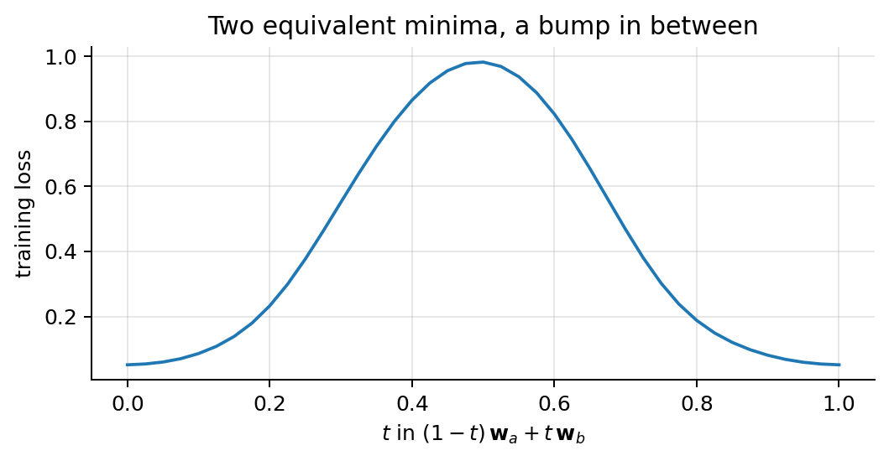
The segment between two global minima rises well above them, which a convex function cannot do. This is a counterexample, so the loss of this network is not convex.
Non-differentiable activations. ReLU has no derivative at \(0\). Backprop uses a sub-derivative there (PyTorch uses \(\mathrm{ReLU}'(0)=0\)). With continuous inputs, a pre-activation is exactly \(0\) with probability \(0\), so the choice almost never matters.
2. Mini-batches: epoch, iteration, batch size
2.1 Vocabulary
- Mini-batch: a few examples (typically 16–256) processed together, as one matrix whose first dimension is \(B\).
- Iteration (or step): one gradient update, computed on one mini-batch.
- Epoch: one full pass over the training set, \(\lceil m/B\rceil\) iterations. The data are shuffled again at the start of every epoch.
Worked example. 50,000 images with \(B=64\): \(50{,}000/64=781.25\), so an epoch has \(\lceil 781.25\rceil=782\) iterations (the last mini-batch has \(50{,}000-781\cdot64=16\) images). Twenty epochs are \(20\cdot782=15{,}640\) updates. In PyTorch, DataLoader(dataset, batch_size=64, shuffle=True) does the shuffling and the cutting, and one pass of for xb, yb in loader: is one epoch.
Try it. Step through one epoch of 64 examples with \(B=16\): shuffle, cut into four mini-batches, and make one update per mini-batch. Four updates make an epoch; then the rows are shuffled again.
2.2 Batch, stochastic and mini-batch gradient descent
The loss is an average over examples, so its gradient is an average of per-example gradients. There are three ways to use them:
- Batch gradient descent: use all \(m\) examples per step. This is what ML notes 01–02 did for linear and logistic regression (convex problems). Exact gradient, smooth path, but one step costs a full pass over the data.
- Stochastic gradient descent (SGD): one example per step. Many cheap updates, each only roughly towards the minimum. The noise can be useful on a non-convex loss (it shakes the parameters out of saddles and sharp minima), but a single example cannot use vectorised hardware.
- Mini-batch gradient descent: a mini-batch per step, \[ \mathbf{w}\leftarrow\mathbf{w}-\alpha\,\mathbf{g},\qquad \mathbf{g}=\frac{1}{B}\sum_{i\in\mathcal{B}}\nabla_{\mathbf{w}}\ell^{(i)}(\mathbf{w}). \] It keeps most of the benefits of SGD, and the \(B\) examples are computed as one matrix product: the same cost per step as one example on a GPU, up to the memory limit. Typical \(B\): 16, 32, 64, 128. In deep learning “SGD” almost always means this mini-batch version.
| Batch size | Pros | Cons |
|---|---|---|
| \(B = m\) (full batch) | exact gradient, smooth curve | very expensive per step, often does not fit in memory |
| \(B = 1\) (pure SGD) | cheapest step | very noisy, cannot use vectorised hardware |
| \(B = 16\)–\(512\) (mini-batch) | GPU-efficient, noise helps escape saddles and sharp minima | the usual choice |
Try it. Linear regression with 200 rows, loss contours in the \((b,w)\) plane (intercept and slope) (the minimum is the black dot). Batch GD makes 30 smooth steps of 200 rows each; SGD makes 400 noisy steps (two epochs of single rows); mini-batches of 16 make 39 steps (three epochs of \(\lceil200/16\rceil=13\) mini-batches), almost as smooth as batch GD.
2.3 The mini-batch gradient is unbiased
Claim. If the mini-batch is drawn uniformly at random, \(\mathbb{E}[\mathbf{g}]=\nabla J(\mathbf{w})\).
Proof. Write the mini-batch as indices \(i_1,\dots,i_B\). Whether they are drawn with replacement or by shuffling and cutting (without replacement), each \(i_b\) on its own is uniform on \(\{1,\dots,m\}\). Then \[ \begin{aligned} \mathbb{E}[\mathbf{g}] &= \frac1B\sum_{b=1}^B\mathbb{E}\big[\nabla\ell^{(i_b)}\big] \\ &\quad\small \text{linearity of expectation}\\ &= \frac1B\sum_{b=1}^B\,\frac1m\sum_{i=1}^m\nabla\ell^{(i)} \\ &\quad\small i_b \text{ is uniform: each } i \text{ has probability } 1/m\\ &= \frac1B\cdot B\,\nabla J = \nabla J . \\ &\quad\small \text{the inner sum is } \nabla J \text{ for every } b \end{aligned} \] \(\blacksquare\) On average every step points the right way. The proof uses only “each index is uniform”, which is exactly what shuffling provides (section 12.1 shows what happens without it).
2.4 Its noise shrinks like \(1/B\)
Let \(\mathbf{u}_i=\nabla\ell^{(i)}-\nabla J\) be the deviation of example \(i\)’s gradient from the full gradient, and \(\boldsymbol{\Sigma}=\frac1m\sum_{i=1}^m\mathbf{u}_i\mathbf{u}_i^\top\) the covariance of per-example gradients (a property of the data and of \(\mathbf{w}\), not of \(B\)).
Claim. With indices drawn independently (with replacement), \(\mathrm{Cov}(\mathbf{g})=\boldsymbol{\Sigma}/B\).
Proof. \[ \begin{aligned} \mathbf{g}-\nabla J &= \frac1B\sum_{b=1}^B\big(\nabla\ell^{(i_b)}-\nabla J\big)=\frac1B\sum_{b=1}^B\mathbf{u}_{i_b} \\ &\quad\small \text{subtract } \nabla J=\tfrac1B\textstyle\sum_b\nabla J\\ \mathrm{Cov}(\mathbf{g}) &= \frac1{B^2}\,\mathrm{Cov}\Big(\sum_{b=1}^B\mathbf{u}_{i_b}\Big) \\ &\quad\small \mathrm{Cov}(c\,\mathbf{v})=c^2\,\mathrm{Cov}(\mathbf{v})\\ &= \frac1{B^2}\sum_{b=1}^B\mathrm{Cov}(\mathbf{u}_{i_b}) \\ &\quad\small \text{independent draws: cross-covariances are } 0\\ &= \frac1{B^2}\cdot B\,\boldsymbol{\Sigma}=\frac{\boldsymbol{\Sigma}}{B}. \\ &\quad\small \mathbb{E}[\mathbf{u}_{i_b}]=\mathbf{0},\ \mathbb{E}[\mathbf{u}_{i_b}\mathbf{u}_{i_b}^\top]=\boldsymbol{\Sigma} \end{aligned} \] \(\blacksquare\) Without replacement (shuffle and cut) the draws are slightly negatively correlated and the variance is a little smaller, \(\mathrm{Cov}(\mathbf{g})=\frac{m-B}{m-1}\,\frac{\boldsymbol{\Sigma}}{B}\) (the finite-population correction of survey sampling). It is \(0\) for \(B=m\), as it should be, and indistinguishable from \(\boldsymbol{\Sigma}/B\) when \(B\ll m\).
So the standard deviation of the gradient noise falls like \(1/\sqrt{B}\): four times the batch halves the noise and costs four times as much per step. We check both formulas on the per-example gradients of a linear regression with \(m=1{,}000\):
m_g = 1000
x_g = rng.normal(size=m_g); y_g = 2 + 3 * x_g + rng.normal(size=m_g)
Xg = np.c_[np.ones(m_g), x_g]; w_g = np.array([0.0, 0.0])
G = (Xg @ w_g - y_g)[:, None] * Xg # per-example gradients of 0.5*(x.w - y)^2, shape (m, 2)
full = G.mean(0); Sigma = np.cov(G.T, bias=True) # full gradient and per-example covariance
print(f"trace(Sigma) = {np.trace(Sigma):.3f}")
print(" B with replacement Sigma/B without replacement FPC formula")
for B_ in [1, 4, 16, 64, 256]:
rep = G[rng.integers(0, m_g, (20000, B_))].mean(1) # 20,000 batches, i.i.d. indices
nor = G[np.argsort(rng.random((20000, m_g)), axis=1)[:, :B_]].mean(1) # shuffle and cut
fpc = np.trace(Sigma) / B_ * (m_g - B_) / (m_g - 1)
print(f"{B_:4d} {np.trace(np.cov(rep.T)):12.3f} {np.trace(Sigma)/B_:10.3f} {np.trace(np.cov(nor.T)):12.3f} {fpc:14.3f}")trace(Sigma) = 33.063
B with replacement Sigma/B without replacement FPC formula
1 32.013 33.063 33.099 33.063
4 8.234 8.266 8.160 8.241
16 2.059 2.066 2.037 2.035
64 0.522 0.517 0.483 0.484
256 0.128 0.129 0.096 0.096The column “with replacement” follows \(\mathrm{tr}\,\boldsymbol{\Sigma}/B\) and the column “without replacement” follows the corrected formula, which is noticeably smaller only when \(B\) is a sizeable fraction of \(m\): the factor \(\frac{m-B}{m-1}\) is \(0.94\) at \(B=64\) and \(0.74\) at \(B=256\).
2.5 Batch size in practice: the noise scale \(\alpha/B\), linear scaling and warm-up
Constant-\(\alpha\) SGD does not converge to a point. Take the simplest loss, one parameter with curvature \(h>0\): \(J(w)=\frac12hw^2\), minimum at \(0\). The mini-batch gradient is \(g_t=hw_t+\xi_t\), with noise \(\xi_t\) of mean \(0\) and variance \(\sigma^2/B\) (section 2.4), independent across steps. Then \[ \begin{aligned} w_{t+1} &= w_t-\alpha(hw_t+\xi_t)=(1-\alpha h)\,w_t-\alpha\,\xi_t \\ &\quad\small \text{SGD step}\\ \mathbb{E}[w_{t+1}] &= (1-\alpha h)\,\mathbb{E}[w_t] \\ &\quad\small \mathbb{E}[\xi_t]=0\\ v_{t+1}:=\mathrm{Var}(w_{t+1}) &= (1-\alpha h)^2\,v_t+\alpha^2\sigma^2/B . \\ &\quad\small w_t \text{ and } \xi_t \text{ are independent} \end{aligned} \] The mean goes to \(0\) when \(|1-\alpha h|<1\) (the same condition as for gradient descent), but the variance settles at the fixed point \(v=(1-\alpha h)^2v+\alpha^2\sigma^2/B\): \[ \begin{aligned} v\,\big(1-(1-\alpha h)^2\big) &= \alpha^2\sigma^2/B \\ &\quad\small \text{collect } v\\ v\,\alpha h\,(2-\alpha h) &= \alpha^2\sigma^2/B \\ &\quad\small 1-(1-a)^2=a(2-a)\\ v &= \frac{\alpha\,\sigma^2}{B\,h\,(2-\alpha h)}\;\approx\;\frac{\sigma^2}{2h}\cdot\frac{\alpha}{B}. \\ &\quad\small \text{divide; } \alpha h\ll1 \end{aligned} \] SGD with a constant learning rate hovers in a “noise ball” around the minimum whose size depends on the ratio \(\alpha/B\), the noise scale. Two consequences: decaying \(\alpha\) late in training shrinks the ball (the schedules of section 5), and scaling \(\alpha\) and \(B\) together keeps the same noise level.
h, sig, a_, B_ = 1.0, 1.0, 0.1, 4
noise = rng.normal(scale=sig / np.sqrt(B_), size=200_000) # xi_t, variance sigma^2 / B
th, samples = 0.0, []
for t, xi in enumerate(noise):
th = th - a_ * (h * th + xi) # SGD step on J = h w^2 / 2
if t > 1000: samples.append(th)
print(f"simulated Var(w) = {np.var(samples):.5f}; formula alpha*sigma^2/(B h (2 - alpha h)) = "
f"{a_ * sig**2 / (B_ * h * (2 - a_ * h)):.5f}")simulated Var(w) = 0.01321; formula alpha*sigma^2/(B h (2 - alpha h)) = 0.01316The linear scaling rule. Compare \(k\) small steps of size \(\alpha\) on mini-batches \(\mathcal{B}_1,\dots,\mathcal{B}_k\) (each of size \(B\)) with one big step of size \(k\alpha\) on their union (size \(kB\)): \[ \begin{aligned} \mathbf{w}_{t+k} &= \mathbf{w}_t-\alpha\sum_{j=1}^{k}\frac1B\sum_{i\in\mathcal{B}_j}\nabla\ell^{(i)}(\mathbf{w}_{t+j-1}) \\ &\quad\small k \text{ small steps}\\ &\approx \mathbf{w}_t-\alpha\sum_{j=1}^{k}\frac1B\sum_{i\in\mathcal{B}_j}\nabla\ell^{(i)}(\mathbf{w}_{t}) \\ &\quad\small \text{if the gradients barely change in } k \text{ steps}\\ &= \mathbf{w}_t-k\alpha\cdot\frac{1}{kB}\sum_{i\in\mathcal{B}_1\cup\dots\cup\mathcal{B}_k}\nabla\ell^{(i)}(\mathbf{w}_t). \\ &\quad\small \text{multiply and divide by } k \end{aligned} \] The last line is one step with batch \(kB\) and learning rate \(k\alpha\). Hence the rule of Goyal et al. (2017): when you multiply the batch size by \(k\), multiply the learning rate by \(k\) (same epochs, same noise scale \(\alpha/B\)). The approximation fails in two places:
- At the start of training, when the gradients change quickly. The fix is warm-up: ramp the learning rate linearly from about \(0\) to its target over the first \(T_w\) steps, \(\alpha_t=\alpha_{\max}\min\big(1,\,t/T_w\big)\).
- When \(k\alpha\) exceeds the stability limit \(2/\lambda_{\max}\) of gradient descent (ML note 01). Beyond a problem-dependent critical batch size a larger batch no longer buys fewer steps, only more cost per step.
For Adam, whose step is already normalised (section 4.4), a gentler \(\alpha\propto\sqrt{B}\) is a common heuristic.
Batch size and generalisation (in words). Small-batch noise is not only a cost: it acts as an implicit regulariser. Large batches trained with the same learning rate tend to settle in sharper minima, which generalise slightly worse (Keskar et al., 2017), and they make fewer updates per epoch. With linear scaling and warm-up most of that gap disappears (Goyal et al. trained ImageNet with \(B=8{,}192\) in one hour without losing accuracy). In practice: take the largest batch that fits in memory for big models, scale \(\alpha\) with it, warm up, and check the validation curve.
The rule on our running example (the digits data of section 6, SGD with momentum \(0.9\), 30 epochs, two seeds averaged): the training loss per epoch for \(B=16,32,64,128\) with \(\alpha=0.05\,B/32\), and \(B=128\) with the unscaled \(\alpha=0.05\).
from sklearn.datasets import load_digits
from sklearn.model_selection import train_test_split
from torch.utils.data import TensorDataset, DataLoader
digits = load_digits()
Xd = (digits.data / 16.0).astype(np.float32); yd = digits.target # pixels scaled to [0, 1]
X_tr, X_rest, y_tr, y_rest = train_test_split(Xd, yd, train_size=500, stratify=yd, random_state=0)
X_va, X_te, y_va, y_te = train_test_split(X_rest, y_rest, test_size=0.5, stratify=y_rest, random_state=0)
to_ds = lambda X, y: TensorDataset(torch.tensor(X), torch.tensor(y))
Xtr_t, ytr_t = torch.tensor(X_tr), torch.tensor(y_tr)
def make_mlp(p_drop=0.0):
return nn.Sequential(nn.Linear(64, 256), nn.ReLU(), nn.Dropout(p_drop),
nn.Linear(256, 256), nn.ReLU(), nn.Dropout(p_drop),
nn.Linear(256, 10)) # logits: CrossEntropyLoss applies log-softmax
def sgd_curve(B, lr, epochs=30, seed=0):
torch.manual_seed(seed); model = make_mlp()
opt = torch.optim.SGD(model.parameters(), lr=lr, momentum=0.9)
loader = DataLoader(to_ds(X_tr, y_tr), batch_size=B, shuffle=True,
generator=torch.Generator().manual_seed(seed))
curve = []
for _ in range(epochs):
model.train()
for xb, yb in loader:
opt.zero_grad(); F.cross_entropy(model(xb), yb).backward(); opt.step()
model.eval()
with torch.no_grad(): curve.append(F.cross_entropy(model(Xtr_t), ytr_t).item())
return np.array(curve)
plt.figure(figsize=(7, 3.8)); final = {}
for B_, lr_ in [(16, 0.025), (32, 0.05), (64, 0.1), (128, 0.2), (128, 0.05)]:
c = np.mean([sgd_curve(B_, lr_, seed=s) for s in range(2)], axis=0)
lab = f"B = {B_}, α = {lr_}" + (" (not scaled)" if (B_, lr_) == (128, 0.05) else "")
plt.plot(np.arange(1, 31), c, ls="--" if "not" in lab else "-", label=lab); final[lab] = c
plt.yscale("log"); plt.xlabel("epoch"); plt.ylabel("training loss"); plt.legend(fontsize=8)
plt.title("Linear scaling: α ∝ B gives the same curve per epoch"); plt.tight_layout(); plt.show()
for lab, c in final.items(): print(f"{lab:32s} loss after 10 epochs {c[9]:.3f}, after 30 {c[-1]:.4f}")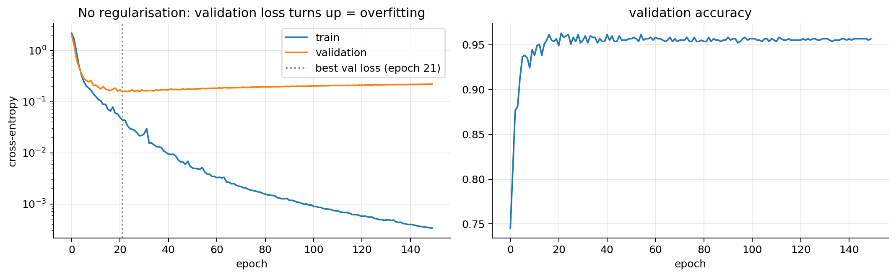
B = 16, α = 0.025 loss after 10 epochs 0.062, after 30 0.0036
B = 32, α = 0.05 loss after 10 epochs 0.093, after 30 0.0035
B = 64, α = 0.1 loss after 10 epochs 0.065, after 30 0.0025
B = 128, α = 0.2 loss after 10 epochs 0.236, after 30 0.0020
B = 128, α = 0.05 (not scaled) loss after 10 epochs 0.545, after 30 0.0690The four scaled runs follow nearly the same curve per epoch, although the \(B=128\) run makes 4 updates per epoch and the \(B=16\) run 32 (the \(B=128\) run lags behind in the first epochs, where “the gradients barely change over \(k\) steps” is least true) and all four end at a loss of a few thousandths. The unscaled \(B=128\) run makes the same 4 updates per epoch with a step 4× too small, and ends at a loss 20 to 35 times higher.
3. The learning rate is the most important knob
Recap from ML note 01. On a one-parameter quadratic \(J(w)=\frac12h(w-w^*)^2\), a gradient step multiplies the error by a constant: \(w_{t+1}-w^*=w_t-\alpha h(w_t-w^*)-w^*=(1-\alpha h)(w_t-w^*)\). It converges iff \(|1-\alpha h|<1\), i.e. \(0<\alpha<2/h\); the fastest choice is \(\alpha=1/h\) (one step); for \(1/h<\alpha<2/h\) it overshoots and oscillates; above \(2/h\) it diverges. With many parameters, \(h\) is replaced by the largest eigenvalue of the Hessian. For a network that curvature is unknown and changes during training, so \(\alpha\) is found by trial.
Too low: the loss creeps down and you run out of patience. Too high: it oscillates, or explodes to NaN (section 11.3 shows both on real data). How to pick it: try powers of 10 (\(10^{-4},10^{-3},10^{-2}\)), or run a learning-rate range test (Smith, 2017):
- Start from the initial weights with a tiny rate, \(\alpha_0=10^{-5}\).
- At every mini-batch multiply the rate by a constant factor \(q\), so that after \(N\) steps it reaches \(\alpha_{\max}\): \(\alpha_k=\alpha_0q^k\) with \(q=(\alpha_{\max}/\alpha_0)^{1/(N-1)}\) (a straight line on a log axis).
- Record the loss, smoothed with a bias-corrected moving average (section 4.1), and stop when it exceeds 4× its minimum.
- Plot loss against \(\log\alpha\). Pick a rate where the loss is still falling steeply, roughly a factor 10 below the rate at the minimum of the curve.
train_loader = DataLoader(to_ds(X_tr, y_tr), batch_size=32, shuffle=True,
generator=torch.Generator().manual_seed(0))
def lr_range_test(model, opt, lr_min=1e-5, lr_max=10.0, steps=200, beta=0.9):
q = (lr_max / lr_min) ** (1 / (steps - 1))
lrs, losses, avg, best, batches = [], [], 0.0, np.inf, iter(train_loader)
for k in range(steps):
lr = lr_min * q ** k
for group in opt.param_groups: group["lr"] = lr
try: xb, yb = next(batches)
except StopIteration: batches = iter(train_loader); xb, yb = next(batches)
opt.zero_grad(); loss = F.cross_entropy(model(xb), yb); loss.backward(); opt.step()
avg = beta * avg + (1 - beta) * loss.item(); smooth = avg / (1 - beta ** (k + 1))
lrs.append(lr); losses.append(smooth); best = min(best, smooth)
if smooth > 4 * best or not np.isfinite(smooth): break
return np.array(lrs), np.array(losses)
plt.figure(figsize=(7, 3.6))
for name, make_opt in [("SGD + momentum 0.9", lambda p: torch.optim.SGD(p, lr=1e-5, momentum=0.9)),
("Adam", lambda p: torch.optim.Adam(p, lr=1e-5))]:
torch.manual_seed(0); model = make_mlp()
lrs, ls = lr_range_test(model, make_opt(model.parameters()))
i_min = ls.argmin(); slope = np.gradient(ls, np.log10(lrs)); i_steep = slope[:i_min].argmin()
plt.plot(lrs, ls, label=name); plt.plot(lrs[i_steep], ls[i_steep], "o", color="k", ms=4)
print(f"{name:20s}: loss minimum at α = {lrs[i_min]:.3g}; steepest descent at α = {lrs[i_steep]:.3g}")
plt.xscale("log"); plt.xlabel("learning rate α (increased every mini-batch)"); plt.ylabel("smoothed training loss")
plt.legend(); plt.title("Learning-rate range test (dots: steepest descent)"); plt.tight_layout(); plt.show()SGD + momentum 0.9 : loss minimum at α = 0.357; steepest descent at α = 0.11
Adam : loss minimum at α = 0.0168; steepest descent at α = 0.00258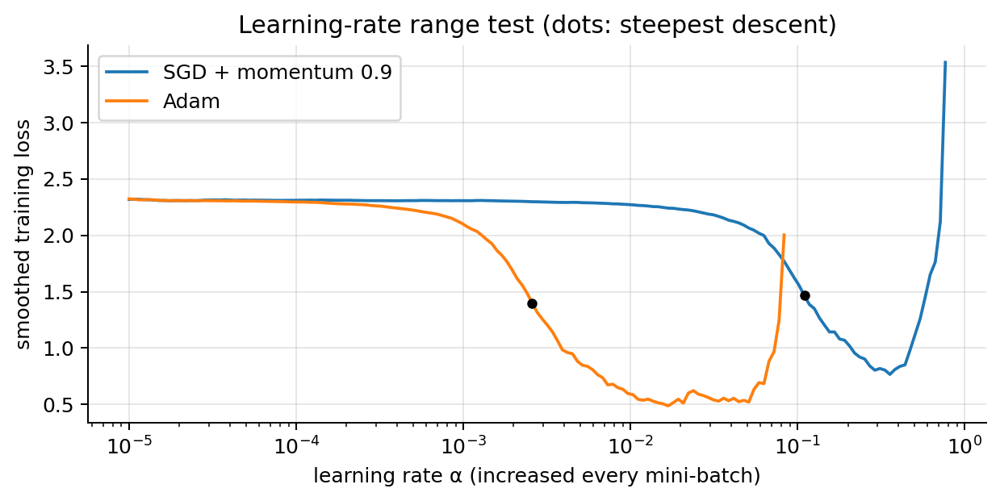
Both suggestions land where the usual defaults are: about \(10^{-1}\) for SGD with momentum and a few \(10^{-3}\) for Adam. The range test costs a fraction of an epoch and replaces guessing. Rules of thumb that usually work: Adam \(10^{-3}\), SGD with momentum \(10^{-1}\) with a schedule, and a rate 10–100× smaller when fine-tuning a pre-trained network (NN note 03, transfer learning).
4. Optimisers
Plain gradient descent has two weaknesses on network losses. In a long, narrow valley (an ill-conditioned Hessian, ML note 01) it zig-zags across and crawls along. And one learning rate must suit parameters whose gradients differ by orders of magnitude (a bias of the last layer and a weight of the first). The optimisers below fix one or both, using one tool: the exponential moving average.
4.1 A tool: the exponential moving average (EMA)
Mini-batch gradients are noisy. Smooth a sequence \(g_1,g_2,\dots\) with a running average that forgets slowly: \[ v_t=\beta\,v_{t-1}+(1-\beta)\,g_t,\qquad v_0=0,\qquad 0\le\beta<1 . \]
Unrolled form. By induction on \(t\): \(v_1=(1-\beta)g_1\), and if \(v_{t-1}=(1-\beta)\sum_{k=1}^{t-1}\beta^{t-1-k}g_k\) then \[ v_t=\beta(1-\beta)\sum_{k=1}^{t-1}\beta^{t-1-k}g_k+(1-\beta)g_t=(1-\beta)\sum_{k=1}^{t}\beta^{t-k}g_k . \] The gradient from \(j=t-k\) steps ago has weight \((1-\beta)\beta^{j}\): recent values weigh more, old ones fade geometrically. The weight has dropped by a factor \(e\) when \(\beta^j=e^{-1}\), i.e. \(j=-1/\ln\beta\approx1/(1-\beta)\) (because \(\ln\beta\approx-(1-\beta)\) for \(\beta\) near 1). So the EMA averages over about \(1/(1-\beta)\) steps: 10 steps for \(\beta=0.9\), 100 for \(\beta=0.99\).
The weights do not sum to 1 at the start. \((1-\beta)\sum_{j=0}^{t-1}\beta^j=(1-\beta)\frac{1-\beta^t}{1-\beta}=1-\beta^t\) (geometric series). The missing mass \(\beta^t\) is the weight given to \(v_0=0\).
Claim (bias of the EMA). If the gradients are stationary, \(\mathbb{E}[g_k]=\mathbb{E}[g]\) for every \(k\), then \(\mathbb{E}[v_t]=(1-\beta^t)\,\mathbb{E}[g]\).
Proof. \[ \begin{aligned} \mathbb{E}[v_t] &= (1-\beta)\sum_{k=1}^{t}\beta^{t-k}\,\mathbb{E}[g_k] \\ &\quad\small \text{unrolled form, linearity of } \mathbb{E}\\ &= (1-\beta)\,\mathbb{E}[g]\sum_{j=0}^{t-1}\beta^{j} \\ &\quad\small \text{stationarity; substitute } j=t-k\\ &= (1-\beta)\,\mathbb{E}[g]\;\frac{1-\beta^t}{1-\beta} \\ &\quad\small \text{geometric series}\\ &= (1-\beta^t)\,\mathbb{E}[g]. \\ &\quad\small \text{cancel } 1-\beta \end{aligned} \] \(\blacksquare\) Early values are biased towards \(0\): \(v_1=(1-\beta)g_1\) is only 10 % of \(g_1\) for \(\beta=0.9\). The fix follows directly: the bias-corrected average \[ \boxed{\hat v_t=\frac{v_t}{1-\beta^t}}\qquad\text{has}\qquad\mathbb{E}[\hat v_t]=\frac{(1-\beta^t)\,\mathbb{E}[g]}{1-\beta^t}=\mathbb{E}[g],\qquad \hat v_1=g_1 . \] The factor \(1-\beta^t\to1\), so the correction only matters for the first few multiples of \(1/(1-\beta)\) steps.
How much noise does it remove? If the \(g_k\) are independent with variance \(\sigma^2\), \[ \mathrm{Var}(v_t)=(1-\beta)^2\sum_{j=0}^{t-1}\beta^{2j}\sigma^2=(1-\beta)^2\,\frac{1-\beta^{2t}}{1-\beta^2}\,\sigma^2\;\xrightarrow[t\to\infty]{}\;\frac{1-\beta}{1+\beta}\,\sigma^2 , \] (variance of a weighted sum of independent terms, geometric series with ratio \(\beta^2\), and \(1-\beta^2=(1-\beta)(1+\beta)\)). For \(\beta=0.9\) that is \(\sigma^2/19\): the same as averaging 19 independent values.
beta, n_seq, T = 0.9, 20000, 50
g = 1.0 + 0.9 * rng.normal(size=(n_seq, T)) # stationary gradients: mean 1, sd 0.9
v = np.zeros(n_seq); rows = []
for t in range(1, T + 1):
v = beta * v + (1 - beta) * g[:, t - 1]
if t in (1, 2, 5, 10, 50):
rows.append((t, v.mean(), 1 - beta**t, (v / (1 - beta**t)).mean(), v.var()))
print(" t mean v_t (1-β^t)·E[g] mean of v_t/(1-β^t) Var(v_t)")
for t, mv, pred, mc, var in rows: print(f"{t:2d} {mv:7.3f} {pred:7.3f} {mc:7.3f} {var:.4f}")
print(f"limit (1-β)/(1+β)·σ² = {(1 - beta) / (1 + beta) * 0.81:.4f}") t mean v_t (1-β^t)·E[g] mean of v_t/(1-β^t) Var(v_t)
1 0.100 0.100 1.004 0.0082
2 0.190 0.190 1.001 0.0146
5 0.409 0.410 1.000 0.0281
10 0.651 0.651 1.000 0.0373
50 0.997 0.995 1.002 0.0421
limit (1-β)/(1+β)·σ² = 0.0426Try it. Noisy gradients over 80 steps (grey), with a mean that drops from 1 to −0.5 at \(t=45\) (green dashes). A small \(\beta\) follows the noise; a large \(\beta\) is smooth but lags behind the change, and starts far too low unless it is bias-corrected (blue). The read-outs show the window \(1/(1-\beta)\) and the first value: here \(g_1=0.82\), so with \(\beta=0.9\) the raw average starts at \(v_1=0.1\cdot0.82=0.08\), while \(\hat v_1=g_1=0.82\) for every \(\beta\).
Momentum averages \(\mathbf{g}\); RMSProp averages \(\mathbf{g}^2\); Adam does both, with this correction.
4.2 Momentum
Idea: keep a velocity. PyTorch’s form is \[ \mathbf{v}\leftarrow\beta\,\mathbf{v}+\mathbf{g},\qquad\mathbf{w}\leftarrow\mathbf{w}-\alpha\,\mathbf{v},\qquad\mathbf{v}_0=\mathbf{0},\ \beta\approx0.9 . \] Unrolled as in section 4.1 (without the \(1-\beta\) factor), \(\mathbf{v}_t=\mathbf{g}_t+\beta\mathbf{g}_{t-1}+\beta^2\mathbf{g}_{t-2}+\dots+\beta^{t-1}\mathbf{g}_1\): a running sum of past gradients that forgets geometrically. Two cases explain its behaviour.
Same gradient every step (the floor of a valley, \(\mathbf{g}_k=\mathbf{g}\)): \[ \mathbf{v}_t=\mathbf{g}\sum_{j=0}^{t-1}\beta^j=\mathbf{g}\,\frac{1-\beta^t}{1-\beta}\;\xrightarrow[t\to\infty]{}\;\frac{\mathbf{g}}{1-\beta}: \] steps up to \(1/(1-\beta)\) times longer, 10× for \(\beta=0.9\).
Alternating gradient (across a valley, \(\mathbf{g}_k=(-1)^k\mathbf{g}\)): \[ \mathbf{v}_t=\sum_{k=1}^{t}\beta^{t-k}(-1)^k\mathbf{g}=(-1)^t\,\mathbf{g}\sum_{j=0}^{t-1}(-\beta)^j=(-1)^t\,\mathbf{g}\,\frac{1-(-\beta)^t}{1+\beta}\;\longrightarrow\;\frac{(-1)^t\,\mathbf{g}}{1+\beta} \] (factor out \((-1)^t\) using \((-1)^k=(-1)^t(-1)^{t-k}\), then a geometric series with ratio \(-\beta\)). Consecutive gradients partly cancel, and the sideways speed shrinks to \(1/1.9\) of a single gradient for \(\beta=0.9\).
The price: like a heavy ball, it overshoots and oscillates before settling; too much momentum oscillates for a long time, so \(\alpha\) and \(\beta\) are tuned together. Some books write the EMA form \(\mathbf{v}\leftarrow\beta\mathbf{v}+(1-\beta)\mathbf{g}\); that velocity is \((1-\beta)\) times PyTorch’s, so it is the same method with \(\alpha\) rescaled by \(1-\beta\). In PyTorch: torch.optim.SGD(params, lr=α, momentum=0.9).
How much faster? (a classical result). On a quadratic whose Hessian has eigenvalues between \(\mu\) and \(L\) (\(\kappa=L/\mu\)), the best constant step of gradient descent, \(\alpha=2/(L+\mu)\), shrinks the error by at most a factor \(\frac{\kappa-1}{\kappa+1}\) per step. Polyak’s heavy-ball method (momentum) with \(\alpha=\frac{4}{(\sqrt{L}+\sqrt{\mu})^2}\), \(\beta=\Big(\frac{\sqrt\kappa-1}{\sqrt\kappa+1}\Big)^2\) achieves \(\frac{\sqrt\kappa-1}{\sqrt\kappa+1}\) asymptotically. The condition number enters through its square root. We check it on the valley of the widget below (\(\mu=0.01\), \(L=2\), \(\kappa=200\)):
mu_, L_ = 0.01, 2.0; kap = L_ / mu_
Hq = np.diag([mu_, L_])
def run_hb(alpha, beta, T=400):
th, v, errs = np.array([-5.0, 0.4]), np.zeros(2), []
for _ in range(T):
v = beta * v + Hq @ th; th = th - alpha * v; errs.append(np.linalg.norm(th))
return np.array(errs)
e_gd = run_hb(2 / (L_ + mu_), 0.0)
e_hb = run_hb(4 / (np.sqrt(L_) + np.sqrt(mu_))**2, ((np.sqrt(kap) - 1) / (np.sqrt(kap) + 1))**2)
rate = lambda e: (e[-1] / e[-101]) ** (1 / 100) # average contraction over the last 100 steps
print(f"kappa = {kap:.0f}: GD rate {rate(e_gd):.4f} (theory {(kap-1)/(kap+1):.4f}), "
f"heavy ball {rate(e_hb):.4f} (theory {(np.sqrt(kap)-1)/(np.sqrt(kap)+1):.4f})")
print(f"steps to shrink the error 1000x: GD ≈ {np.log(1e-3)/np.log((kap-1)/(kap+1)):.0f}, "
f"momentum ≈ {np.log(1e-3)/np.log((np.sqrt(kap)-1)/(np.sqrt(kap)+1)):.0f}")kappa = 200: GD rate 0.9900 (theory 0.9900), heavy ball 0.8704 (theory 0.8679)
steps to shrink the error 1000x: GD ≈ 691, momentum ≈ 49Try it. The valley is 200 times more curved along \(w_2\) than along \(w_1\); 60 steps with \(\alpha=0.9\) from the same start. Plain gradient descent (grey) multiplies the \(w_1\) error by \(1-0.9\cdot0.01=0.991\) per step and is still far from the minimum after 60 steps (loss 0.042). Momentum (red) accumulates the consistent \(w_1\) gradient: after 60 steps the loss is 0.014 with \(\beta=0.5\) and 0.0003 with \(\beta=0.9\), while \(\beta=0.95\) overshoots and is still oscillating (0.009).
4.3 RMSProp: a step size per parameter
Gradients of different parameters can be 1,000× apart, and one learning rate cannot suit both. RMSProp divides each parameter’s step by the typical size of its own recent gradients: \[ \mathbf{s}\leftarrow\beta_2\,\mathbf{s}+(1-\beta_2)\,\mathbf{g}\odot\mathbf{g},\qquad \mathbf{w}\leftarrow\mathbf{w}-\alpha\,\frac{\mathbf{g}}{\sqrt{\mathbf{s}}+\varepsilon}. \]
- \(\mathbf{s}\) is an EMA (section 4.1) of the squared gradient, element by element, and \(\sqrt{\mathbf{s}}\) is the root-mean-square (RMS) of recent gradients: the typical gradient size of each parameter. Typical \(\beta_2=0.9\)–\(0.999\); \(\varepsilon\approx10^{-8}\) only avoids dividing by zero.
- Scale invariance. Multiply every gradient of parameter \(j\) by \(c>0\). Then \(s_j\) is multiplied by \(c^2\), \(\sqrt{s_j}\) by \(c\), and the step \(\alpha\,c\,g_j/(c\sqrt{s_j})\) is unchanged (up to \(\varepsilon\)). Gradients of size \(\approx0.02\) are divided by \(\approx0.02\) and gradients of size \(\approx1\) by \(\approx1\): every parameter moves about \(\alpha\) per step.
- With a constant gradient \(g_j=\gamma\), \(s_j\to\gamma^2\) and the step tends to \(\alpha\,\mathrm{sign}(\gamma)\). Dividing by \(\sqrt{\mathbf{s}}\) is a diagonal preconditioner: it rescales the axes of the loss, in the same spirit as standardising the features for linear regression (ML note 01).
4.4 Adam = momentum + RMSProp + bias correction
Keep both averages, correct their start, and step: \[ \begin{aligned} \mathbf{m}_t &= \beta_1\mathbf{m}_{t-1}+(1-\beta_1)\,\mathbf{g}_t \\ &\quad\small \text{momentum: EMA of } \mathbf{g}\\ \mathbf{s}_t &= \beta_2\mathbf{s}_{t-1}+(1-\beta_2)\,\mathbf{g}_t^2 \\ &\quad\small \text{RMSProp: EMA of } \mathbf{g}^2\\ \hat{\mathbf{m}}_t &= \frac{\mathbf{m}_t}{1-\beta_1^t},\qquad\hat{\mathbf{s}}_t=\frac{\mathbf{s}_t}{1-\beta_2^t} \\ &\quad\small \text{bias correction (section 4.1)}\\ \mathbf{w}_t &= \mathbf{w}_{t-1}-\alpha\,\frac{\hat{\mathbf{m}}_t}{\sqrt{\hat{\mathbf{s}}_t}+\varepsilon} \end{aligned} \] with defaults \(\beta_1=0.9\), \(\beta_2=0.999\), \(\varepsilon=10^{-8}\), \(\alpha=10^{-3}\) (Kingma & Ba, 2015). It is the most popular optimiser because it usually works without tuning anything but \(\alpha\).
Why the bias correction matters for Adam. Both averages start at \(\mathbf{0}\). At \(t=1\): \[ \begin{aligned} \mathbf{m}_1 &= 0.1\,\mathbf{g}_1,\qquad \mathbf{s}_1=0.001\,\mathbf{g}_1^2 \\ &\quad\small \text{one EMA step from } \mathbf{0}\\ \hat{\mathbf{m}}_1 &= \mathbf{g}_1,\qquad\ \ \hat{\mathbf{s}}_1=\mathbf{g}_1^2 \\ &\quad\small \text{divide by } 1-0.9 \text{ and } 1-0.999\\ \mathbf{w}_1-\mathbf{w}_0 &= -\alpha\,\frac{\mathbf{g}_1}{|\mathbf{g}_1|+\varepsilon}\approx-\alpha\,\mathrm{sign}(\mathbf{g}_1). \\ &\quad\small \sqrt{\mathbf{g}_1^2}=|\mathbf{g}_1| \end{aligned} \] The first step moves every parameter by about \(\alpha\). Without the correction it would be \(\alpha\cdot0.1\,\mathbf{g}_1/(\sqrt{0.001}\,|\mathbf{g}_1|)=3.16\,\alpha\,\mathrm{sign}(\mathbf{g}_1)\): more than three times too large, because \(\mathbf{s}\) is biased more than \(\mathbf{m}\). The correction matters for about 50 steps for \(\mathbf{m}\) (\(0.9^{50}\approx0.005\)) but for thousands of steps for \(\mathbf{s}\) (\(0.999^{5000}\approx0.007\)).
print(f"0.9**50 = {0.9**50:.4f}, 0.999**5000 = {0.999**5000:.4f}, "
f"uncorrected first step / alpha = {0.1 / np.sqrt(0.001):.2f}")
w_ = torch.nn.Parameter(torch.tensor([1.0, -2.0, 3.0]))
opt_ = torch.optim.Adam([w_], lr=1e-3)
w_.grad = torch.tensor([5e-4, 30.0, -7.0]); opt_.step() # gradients of wildly different sizes
print("first Adam step in PyTorch:", (w_.detach() - torch.tensor([1.0, -2.0, 3.0])).numpy(), "(= -alpha * sign(g))")0.9**50 = 0.0052, 0.999**5000 = 0.0067, uncorrected first step / alpha = 3.16
first Adam step in PyTorch: [-0.00099999 -0.00099993 0.00099993] (= -alpha * sign(g))Adam’s step is roughly bounded by \(\alpha\). \(\hat{\mathbf{m}}_t\) is a weighted average of recent gradients and \(\sqrt{\hat{\mathbf{s}}_t}\) the root of a weighted average of their squares; since \((\text{average of } g)^2\le\text{average of } g^2\) (Jensen’s inequality, exact when both averages use the same weights), the ratio is typically at most about 1 in size. It is close to \(\pm1\) when the gradients are consistent and much smaller when they are noisy (the mean cancels, the RMS does not). So Adam automatically takes smaller steps where the gradient is unreliable.
| Method | Idea | To tune |
|---|---|---|
| Momentum | smooths the direction, speeds up flat valleys | \(\alpha\), \(\beta\) |
| RMSProp | per-parameter step size | \(\alpha\), \(\beta_2\) |
| Adam | both, bias-corrected | \(\alpha\) (the rest: defaults) |
4.5 The optimisers side by side
Try it. A narrow valley \(J=\frac12(0.08w_1^2+2w_2^2)\), 25× more curved along \(w_2\); 60 steps of each method from the same start, where \(J=2.44\). The gradient-descent error along \(w_2\) is multiplied by \(1-2\alpha\) per step and along \(w_1\) by \(1-0.08\alpha\). In the widget, momentum uses \(\beta=0.9\) with rate \(0.1\alpha\), and RMSProp and Adam use the rate \(0.3\alpha\).
- \(\alpha=0.1\): all four are still far from the minimum after 60 steps (final losses between 0.37 and 0.44). Gradient descent shrinks the \(w_1\) error by only \(0.992\) per step, and the adaptive methods move about \(0.3\alpha=0.03\) per step, less than 2 units of the 5 to go.
- \(\alpha=0.316\): RMSProp (0.002) and Adam (0.016) are ahead of gradient descent (0.046) and momentum (0.038). Gradient descent does not zig-zag here, since \(1-2\alpha=0.37>0\); it just crawls along \(w_1\). (It would zig-zag only for \(\alpha>0.5\), when the factor becomes negative; here it is momentum that swings across the valley.)
- \(\alpha=1.26\): \(|1-2\alpha|=1.52>1\), so gradient descent diverges (loss above 1,000), while momentum, RMSProp and Adam converge.
The same experiment in code, on a bowl with condition number 25 (\(J=\frac12(w_1^2+25w_2^2)\)), with the update rules written out by hand:
# Optimisers on an ill-conditioned quadratic J = 0.5*(a*t1^2 + b*t2^2)
a_, b_ = 1.0, 25.0
grad = lambda t: np.array([a_ * t[0], b_ * t[1]])
def run(step_fn, T=60):
t, state, path = np.array([-4.0, 1.5]), {}, []
for k in range(1, T + 1):
path.append(t.copy()); t = step_fn(t, grad(t), state, k)
return np.array(path)
def gd(t, g, s, k, lr=0.075): return t - lr * g
def momentum(t, g, s, k, lr=0.05, beta=0.6):
s["v"] = beta * s.get("v", 0) + g; return t - lr * s["v"]
def rmsprop(t, g, s, k, lr=0.1, b2=0.9, eps=1e-8):
s["s"] = b2 * s.get("s", 0) + (1 - b2) * g * g; return t - lr * g / (np.sqrt(s["s"]) + eps)
def adam(t, g, s, k, lr=0.3, b1=0.9, b2=0.999, eps=1e-8):
s["m"] = b1 * s.get("m", 0) + (1 - b1) * g; s["s"] = b2 * s.get("s", 0) + (1 - b2) * g * g
mh, sh = s["m"] / (1 - b1 ** k), s["s"] / (1 - b2 ** k); return t - lr * mh / (np.sqrt(sh) + eps)
T1, T2 = np.meshgrid(np.linspace(-4.5, 1.5, 200), np.linspace(-1.8, 1.8, 200))
plt.figure(figsize=(8, 4))
plt.contour(T1, T2, 0.5 * (a_ * T1 ** 2 + b_ * T2 ** 2), levels=np.logspace(-2, 1.7, 15), cmap="viridis", alpha=0.6)
for fn, name in [(gd, "gradient descent"), (momentum, "momentum β=0.6"), (rmsprop, "RMSProp"), (adam, "Adam")]:
p = run(fn); plt.plot(p[:, 0], p[:, 1], ".-", ms=4, label=name)
print(f"{name:17s}: loss after 60 steps {0.5 * (a_ * p[-1, 0]**2 + b_ * p[-1, 1]**2):.2e}")
plt.plot(0, 0, "k*", ms=12); plt.legend(); plt.xlabel(r"$w_1$"); plt.ylabel(r"$w_2$")
plt.title("60 steps on an elongated bowl (condition number 25)"); plt.tight_layout(); plt.show()gradient descent : loss after 60 steps 8.13e-04
momentum β=0.6 : loss after 60 steps 4.55e-10
RMSProp : loss after 60 steps 9.51e-05
Adam : loss after 60 steps 3.54e-02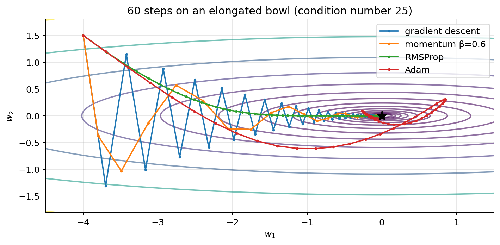
Gradient descent (\(\alpha=0.075\): factors \(0.925\) along \(w_1\) and \(1-25\cdot0.075=-0.875\) along \(w_2\)) zig-zags across the narrow direction and crawls along the long one. Momentum damps the zig-zag and reaches the minimum (on a small quadratic like this one it wins clearly). Too much momentum (e.g. \(\beta=0.9\) here) overshoots and spirals, so \(\alpha\) and \(\beta\) are tuned together. RMSProp and Adam rescale both directions to a similar step size, so they head diagonally towards the minimum without zig-zagging: RMSProp walks straight in. Adam’s momentum carries it past the minimum (to \(w_1\approx0.8\)) and after 60 steps it is still coming back, with the largest final loss of the four. Its steps have size about \(\alpha\) whatever the gradient, so with a large constant \(\alpha\) it needs a decaying schedule (section 5) to settle.
4.6 Which optimiser, which learning rate?
| Optimiser | PyTorch | Typical \(\alpha\) | Used for | Notes |
|---|---|---|---|---|
| SGD + momentum | SGD(lr, momentum=0.9) |
0.01–0.1 + schedule | CNNs on images (ResNet…) | often the best final accuracy, needs tuning |
| Adam | Adam(lr) |
\(10^{-3}\) | almost everything, first try | robust to the choice of \(\alpha\) |
| AdamW | AdamW(lr, weight_decay=0.01) |
\(10^{-4}\)–\(10^{-3}\) | transformers, fine-tuning | Adam with correct weight decay (section 8.2) |
| RMSProp | RMSprop(lr) |
\(10^{-3}\) | RNNs, reinforcement learning | Adam without momentum |
Rule of thumb. Start with Adam, \(\alpha=10^{-3}\), batch 32–64. If it trains, try halving and doubling \(\alpha\) once. If a paper you are reproducing uses SGD with momentum, copy its schedule. Bigger batches need bigger learning rates (the gradient is less noisy; section 2.5), and fine-tuning a pre-trained network needs a much smaller \(\alpha\) than training from scratch.
5. Learning-rate schedules
Why change \(\alpha\) during training. Large steps early move fast; small steps late settle. Section 2.5 made the second half precise: constant-\(\alpha\) SGD hovers in a noise ball of variance \(\propto\alpha/B\), so shrinking \(\alpha\) at the end lets it converge. (The classical sufficient conditions for SGD to converge are \(\sum_t\alpha_t=\infty\), so it can travel any distance, and \(\sum_t\alpha_t^2<\infty\), so the accumulated noise is finite; \(\alpha_t\propto1/t\) satisfies both.) The common schedules, with \(t\) the epoch (or step), \(T\) the total and \(\alpha_0\) the peak rate:
| Schedule | Formula | PyTorch (torch.optim.lr_scheduler) |
|---|---|---|
| constant | \(\alpha_t=\alpha_0\) | — |
| step decay | \(\alpha_t=\alpha_0\,\gamma^{\lfloor t/k\rfloor}\) (e.g. \(\gamma=0.1\) every 30 epochs) | StepLR(opt, step_size=k, gamma=γ) |
| exponential | \(\alpha_t=\alpha_0\,\gamma^{t}\) (\(\gamma\) slightly below 1) | ExponentialLR(opt, gamma=γ) |
| cosine | \(\alpha_t=\alpha_{\min}+\frac12(\alpha_0-\alpha_{\min})\big(1+\cos(\pi t/T)\big)\) | CosineAnnealingLR(opt, T_max=T) |
| linear warm-up | \(\alpha_t=\alpha_0\,t/T_w\) for \(t<T_w\), then any of the above | LinearLR + SequentialLR |
| one-cycle | up from \(\alpha_0/25\) to \(\alpha_0\) in the first 30 % of steps, then cosine down to \(\alpha_0/(25\cdot10^4)\) | OneCycleLR(opt, max_lr=α₀, total_steps=T) |
| reduce on plateau | \(\alpha\leftarrow\gamma\,\alpha\) after patience epochs without improvement of the validation loss |
ReduceLROnPlateau(opt, factor=γ, patience=p) |
Warm-up, in more detail. Adam’s first step moves every parameter by the full \(\alpha\) (section 4.4), whatever the quality of that first gradient, and \(\hat{\mathbf{s}}_t\) is an average of only \(t\) squared gradients, so early steps are large and poorly informed. Large-batch SGD has the same problem (section 2.5). A warm-up of a few hundred to a few thousand steps (or ~5 % of training) is standard for transformers. One-cycle (Smith & Topin, 2019) combines a long warm-up, a high peak, and a very low final rate (PyTorch’s OneCycleLR also cycles the momentum the opposite way, from 0.95 down to 0.85 and back). Reduce on plateau needs no planning: it divides \(\alpha\) when the validation loss stalls (used in the face labs).
We implement the formulas and check them against PyTorch’s schedulers, stepping each one 100 times:
def lrs_from(sched_fn, steps=100, lr=1.0):
p = torch.nn.Parameter(torch.zeros(1)); o = torch.optim.SGD([p], lr=lr); s = sched_fn(o); out = []
for _ in range(steps):
out.append(o.param_groups[0]["lr"]); o.step(); s.step()
return np.array(out)
S = torch.optim.lr_scheduler; t = np.arange(100); T_ = 100
def one_cycle(t, T, a_max=1.0, div=25, final_div=1e4, pct=0.3):
a0, a_min = a_max / div, a_max / div / final_div; t_up = pct * T - 1 # PyTorch's phase boundary
cos_anneal = lambda start, end, frac: end + (start - end) / 2 * (np.cos(np.pi * frac) + 1)
return np.where(t <= t_up, cos_anneal(a0, a_max, t / t_up), cos_anneal(a_max, a_min, (t - t_up) / (T - 1 - t_up)))
schedules = {
"step decay (×0.5 every 25)": (0.5 ** (t // 25), lambda o: S.StepLR(o, step_size=25, gamma=0.5)),
"exponential (γ = 0.97)": (0.97 ** t, lambda o: S.ExponentialLR(o, gamma=0.97)),
"cosine": (0.5 * (1 + np.cos(np.pi * t / T_)), lambda o: S.CosineAnnealingLR(o, T_max=T_)),
"one-cycle": (one_cycle(t, T_), lambda o: S.OneCycleLR(o, max_lr=1.0, total_steps=T_)),
}
plt.figure(figsize=(7, 3.6))
for name, (formula, fn) in schedules.items():
torch_lrs = lrs_from(fn); plt.plot(t, formula, label=name)
print(f"{name:28s} max |formula - PyTorch| = {np.abs(formula - torch_lrs).max():.1e}")
warm = np.where(t < 8, t / 8, 0.5 * (1 + np.cos(np.pi * (t - 8) / 92))) # warm-up + cosine, by formula
plt.plot(t, warm, ls="--", label="linear warm-up (8) + cosine")
plt.xlabel("epoch"); plt.ylabel("α / α₀"); plt.legend(fontsize=8); plt.title("Learning-rate schedules")
plt.tight_layout(); plt.show()step decay (×0.5 every 25) max |formula - PyTorch| = 0.0e+00
exponential (γ = 0.97) max |formula - PyTorch| = 2.2e-16
cosine max |formula - PyTorch| = 0.0e+00
one-cycle max |formula - PyTorch| = 0.0e+00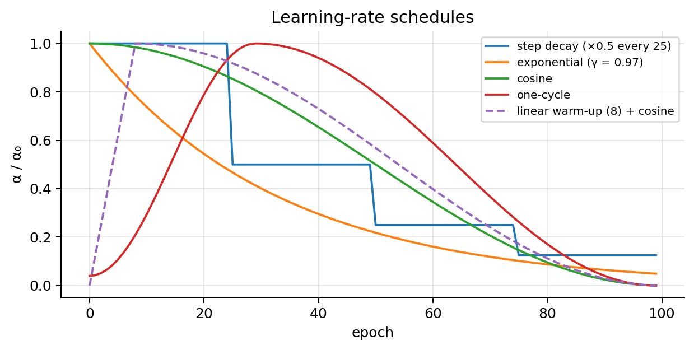
Where sched.step() goes. After opt.step(): once per epoch for epoch-based schedules (StepLR, CosineAnnealingLR with T_max=epochs), once per mini-batch for step-based ones (OneCycleLR, warm-up counted in steps), and ReduceLROnPlateau.step(val_loss) after each validation.
6. The model and the PyTorch training loop
6.1 Anatomy of a model: shapes through the layers
Every layer is a function tensor in → tensor out. To design or debug a network, write the shape after each layer; the first number is always the batch size \(B\), which passes through untouched. The Fashion-MNIST MLP of the slides:
model = nn.Sequential(
nn.Flatten(), # [B,1,28,28] -> [B,784]
nn.Linear(784, 256), # 784*256 + 256 params
nn.ReLU(),
nn.Dropout(0.2),
nn.Linear(256, 10), # logits, one per class
)
loss_fn = nn.CrossEntropyLoss() # softmax insidemodel(xb).shape and sum(p.numel() for p in model.parameters()) are the two commands you will type most. A Linear(n_in, n_out) has \(n_{\text{in}}n_{\text{out}}\) weights plus \(n_{\text{out}}\) biases. Layers with parameters: Linear, Conv2d, Embedding, BatchNorm, LSTM; layers without: ReLU, Dropout, Flatten, MaxPool2d.
fm = nn.Sequential(nn.Flatten(), nn.Linear(784, 256), nn.ReLU(), nn.Dropout(0.2), nn.Linear(256, 10))
xb = torch.zeros(32, 1, 28, 28)
for layer in fm:
xb = layer(xb); n = sum(p.numel() for p in layer.parameters())
print(f"{layer.__class__.__name__:8s} -> {list(xb.shape)} {n:7,d} params")
tot = sum(p.numel() for p in fm.parameters())
print(f"total {tot:,d}; share of the first Linear {fm[1].weight.numel() + fm[1].bias.numel()} / {tot} = "
f"{(784 * 256 + 256) / tot:.1%}")Flatten -> [32, 784] 0 params
Linear -> [32, 256] 200,960 params
ReLU -> [32, 256] 0 params
Dropout -> [32, 256] 0 params
Linear -> [32, 10] 2,570 params
total 203,530; share of the first Linear 200960 / 203530 = 98.7%6.2 The running example and the loop
The scikit-learn digits dataset: 1,797 greyscale 8×8 images of handwritten digits, 10 classes, pixels scaled to \([0,1]\) (loaded in section 2.5). It trains in seconds on a CPU. We deliberately train on only 500 images, so that overfitting is visible, and split the rest into a validation set (for choosing hyperparameters and early stopping) and a test set (touched once, at the end). Our MLP is \(64\to256\to256\to10\) with ReLU.
val_loader = DataLoader(to_ds(X_va, y_va), batch_size=256)
test_loader = DataLoader(to_ds(X_te, y_te), batch_size=256)
print(f"train {len(y_tr)}, validation {len(y_va)}, test {len(y_te)}; input dim {Xd.shape[1]}, 10 classes; "
f"MLP parameters {sum(p.numel() for p in make_mlp().parameters()):,d}")
def evaluate(model, loader, loss_fn):
model.eval() # dropout off, batch-norm uses running statistics
total_loss, correct, n = 0.0, 0, 0
with torch.no_grad(): # no graph: faster, less memory
for xb, yb in loader:
out = model(xb)
total_loss += loss_fn(out, yb).item() * len(yb) # weight by batch size
correct += (out.argmax(1) == yb).sum().item(); n += len(yb)
return total_loss / n, correct / n
def train(model, optimizer, epochs=150, patience=None, loader=None):
loss_fn = nn.CrossEntropyLoss(); loader = loader or train_loader
hist = {"train_loss": [], "val_loss": [], "val_acc": []}
best, best_state, wait = np.inf, None, 0
for epoch in range(epochs):
model.train() # dropout on
run_loss, n = 0.0, 0
for xb, yb in loader:
optimizer.zero_grad() # 1. reset accumulated gradients
loss = loss_fn(model(xb), yb) # 2. forward pass + loss
loss.backward() # 3. backprop
optimizer.step() # 4. parameter update
run_loss += loss.item() * len(yb); n += len(yb)
vl, va = evaluate(model, val_loader, loss_fn)
hist["train_loss"].append(run_loss / n); hist["val_loss"].append(vl); hist["val_acc"].append(va)
if vl < best: # keep the best weights (checkpoint)
best, wait = vl, 0; best_state = {k: v.clone() for k, v in model.state_dict().items()}
else:
wait += 1
if patience is not None and wait >= patience:
break # early stopping
return hist, best_state
torch.manual_seed(0)
model = make_mlp()
hist_plain, _ = train(model, torch.optim.Adam(model.parameters(), lr=1e-3))
print(f"final: train loss {hist_plain['train_loss'][-1]:.4f}, val loss {hist_plain['val_loss'][-1]:.3f}, val acc {hist_plain['val_acc'][-1]:.3f}")train 500, validation 648, test 649; input dim 64, 10 classes; MLP parameters 85,002
final: train loss 0.0003, val loss 0.205, val acc 0.963The lines that every loop has: zero_grad() → forward → loss → backward() → step(). PyTorch adds each new gradient to .grad, so forgetting zero_grad() sums the gradients of all previous steps (section 11.1). Plus the two modes: model.train() for training and model.eval() with torch.no_grad() for evaluation; they switch dropout and BatchNorm (sections 8.5 and 9). With a schedule, sched.step() goes after the epoch’s last opt.step():
opt = torch.optim.AdamW(model.parameters(), lr=1e-3, weight_decay=1e-2)
sched = torch.optim.lr_scheduler.CosineAnnealingLR(opt, T_max=epochs)
for epoch in range(epochs):
model.train() # training mode
for xb, yb in train_loader: # mini-batches
loss = loss_fn(model(xb), yb)
opt.zero_grad()
loss.backward() # backprop
opt.step() # update
sched.step() # once per epoch
model.eval() # evaluation mode
with torch.no_grad():
val_loss = evaluate(model, val_loader)Frameworks like PyTorch Lightning (NN note 03, face lab) write this loop, the device handling, checkpointing and early stopping for you, but it is the same loop.
Averaging metrics over an epoch. Weight each batch by its size (the last batch is usually smaller). For non-linear metrics, don’t average per-batch values: with \(N\) batches of equal size, \(\frac1N\sum_b\sqrt{\mathrm{MSE}_b}\le\sqrt{\frac1N\sum_b\mathrm{MSE}_b}\) by Jensen’s inequality (\(\sqrt{\cdot}\) is concave), so the average of per-batch RMSEs underestimates the true RMSE. Accumulate sums and take the root at the end.
Lab 8 · The MLP again, now with PyTorch (open in Colab). The network of Lab 7 rebuilt with the tools used from now on: tensors and autograd (check that loss.backward() gives the gradients derived by hand in NN note 01), nn.Linear and nn.Module, why BCEWithLogitsLoss takes logits, a training loop by hand and then with SGD, momentum and Adam, Dataset and DataLoader with a validation set, saving and loading a model. Runs on a CPU.
7. Overfitting and underfitting: reading learning curves
A network with 85,002 parameters trained on 500 images can memorise them. Always plot the learning curves: training and validation loss per epoch.
| Pattern | Diagnosis | What to do |
|---|---|---|
| train and val loss both high, close together | underfitting (high bias) | deeper or wider model, new architecture, train longer, tune \(\alpha\), better features |
| train loss ↓ to ~0, val loss ↓ then ↑ | overfitting (high variance) | more data (also augmentation), simpler architecture, L2/L1, dropout, early stopping; combine several |
| loss explodes / NaN | \(\alpha\) too high, exploding gradients | lower \(\alpha\), gradient clipping, check the data (section 11.3) |
| loss flat from the start | \(\alpha\) too low, dead units, a bug | range test, overfit one batch (section 11.1) |
fig, axes = plt.subplots(1, 2, figsize=(12, 3.8))
axes[0].plot(hist_plain["train_loss"], label="train"); axes[0].plot(hist_plain["val_loss"], label="validation")
best_ep = int(np.argmin(hist_plain["val_loss"]))
axes[0].axvline(best_ep, color="gray", ls=":", label=f"best val loss (epoch {best_ep})")
axes[0].set_yscale("log"); axes[0].set_xlabel("epoch"); axes[0].set_ylabel("cross-entropy"); axes[0].legend()
axes[0].set_title("No regularisation: validation loss turns up = overfitting")
axes[1].plot(hist_plain["val_acc"]); axes[1].set_xlabel("epoch"); axes[1].set_ylabel("accuracy")
axes[1].set_title("validation accuracy")
plt.tight_layout(); plt.show()
print(f"validation loss: minimum {min(hist_plain['val_loss']):.3f} at epoch {best_ep}, "
f"final {hist_plain['val_loss'][-1]:.3f}; training loss final {hist_plain['train_loss'][-1]:.2e}")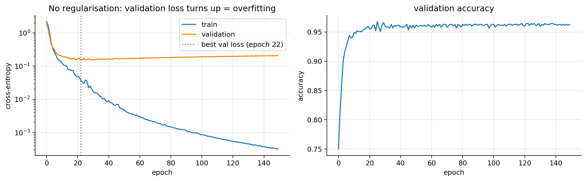
validation loss: minimum 0.151 at epoch 22, final 0.205; training loss final 3.19e-048. Regularisation
8.1 Weight decay (L2)
Add a penalty on the size of the weights to the loss (ML note 03; biases are usually left out): \[ J_{\text{reg}}(\mathbf{w})=J(\mathbf{w})+\frac{\lambda}{2}\lVert\mathbf{w}\rVert^2\qquad\Rightarrow\qquad\nabla J_{\text{reg}}=\nabla J+\lambda\,\mathbf{w} \] (the gradient of \(\frac\lambda2\sum_jw_j^2\) with respect to \(w_j\) is \(\lambda w_j\)). Plug it into the gradient-descent step: \[ \begin{aligned} \mathbf{w} &\leftarrow \mathbf{w}-\alpha\big(\nabla J+\lambda\mathbf{w}\big) \\ &\quad\small \text{gradient step on } J_{\text{reg}}\\ &= (1-\alpha\lambda)\,\mathbf{w}-\alpha\nabla J . \\ &\quad\small \text{collect the terms in } \mathbf{w} \end{aligned} \] Every step first shrinks the weights by a constant factor \(1-\alpha\lambda\) (e.g. \(1-10^{-3}\cdot10^{-1}=0.9999\)), then takes the data step: hence the name weight decay. Only weights that the data keeps pushing stay large.
- Why it helps. Large weights make steep, wiggly functions that can pass through every noisy point; small weights give smooth ones. It is ridge regression for networks.
- As a prior (restating ML note 03). Maximum a posteriori estimation minimises \(-\log p(\text{data}\mid\mathbf{w})-\log p(\mathbf{w})\). With independent Gaussian priors \(w_j\sim\mathcal{N}(0,\tau^2)\), \(-\log p(\mathbf{w})=\frac{1}{2\tau^2}\lVert\mathbf{w}\rVert^2+\text{const}\). Since our \(J\) is the negative log-likelihood divided by \(m\), this is \(J+\frac{\lambda}{2}\lVert\mathbf{w}\rVert^2\) with \(\lambda=1/(m\tau^2)\): a narrower prior means a larger \(\lambda\).
- L1 (\(\lambda\lVert\mathbf{w}\rVert_1\), gradient \(\lambda\,\mathrm{sign}(\mathbf{w})\)) pushes small weights to exactly 0: sparse networks. Less common in deep learning.
- PyTorch:
SGD(params, lr, weight_decay=1e-4)adds \(\lambda\mathbf{w}\) to the gradient of every parameter it is given, biases and normalisation parameters included. To exclude them, pass two parameter groups:[{"params": weights, "weight_decay": 1e-4}, {"params": biases_and_norms, "weight_decay": 0.0}].
Try it. A network with two hidden layers of 24 tanh units (about 700 weights: \(2\cdot24+24+24\cdot24+24+24+1=697\)) trained in the browser on only 40 noisy points (big dots). The faint dots are 600 new points from the same distribution. Increase \(\lambda\) and watch the size of the weights \(\lVert\mathbf{w}\rVert\), the border and the two accuracies.
With \(\lambda=0\) the network fits all 40 training points (training accuracy 1.000) with large weights (\(\lVert\mathbf{w}\rVert\approx30.5\)) and scores 0.827 on the new points. With \(\lambda=0.003\) the weights shrink to \(\lVert\mathbf{w}\rVert\approx6.2\), the training accuracy drops to 0.950 and the accuracy on new data rises to 0.902. With \(\lambda=0.1\) (\(\lVert\mathbf{w}\rVert\approx2.1\)) the border is too simple: 0.925 and 0.810. \(\lambda\) is a hyperparameter: choose it on the validation set, never on the test set.
8.2 Why “L2 in Adam” is not weight decay: AdamW
With SGD, adding \(\frac\lambda2\lVert\mathbf{w}\rVert^2\) to the loss and shrinking the weights by \(1-\alpha\lambda\) are the same thing (section 8.1). With Adam they are not. Adding the penalty to the loss means Adam sees the gradient \(\tilde{\mathbf{g}}_t=\mathbf{g}_t+\lambda\mathbf{w}_{t-1}\), and \[ \begin{aligned} \hat{\mathbf{m}}_t(\tilde{\mathbf{g}}) &= \hat{\mathbf{m}}_t(\mathbf{g})+\lambda\,\overline{\mathbf{w}}_t\;\approx\;\hat{\mathbf{m}}_t(\mathbf{g})+\lambda\,\mathbf{w}_{t-1} \\ &\quad\small \text{the EMA is linear; } \overline{\mathbf{w}}_t \text{ = EMA of recent weights}\\ \Delta w_j &\approx -\alpha\,\frac{\hat m_{t,j}(\mathbf{g})}{\sqrt{\hat s_{t,j}}+\varepsilon}\;-\;\underbrace{\frac{\alpha\lambda}{\sqrt{\hat s_{t,j}}+\varepsilon}}_{\text{decay rate of } w_j}\,w_{j} . \\ &\quad\small \text{Adam step, split in two} \end{aligned} \] The decay term is divided by \(\sqrt{\hat s_{t,j}}+\varepsilon\) like the rest of the gradient. Weight \(j\) is decayed at the rate \(\alpha\lambda/(\sqrt{\hat s_{t,j}}+\varepsilon)\) instead of \(\alpha\lambda\): heavily-updated weights (large gradients, large \(\hat s_{t,j}\)) are decayed less, and weights with tiny gradients much more. The regularisation strength now depends on the gradient history, which is not what L2 was meant to do.
AdamW (Loshchilov & Hutter, 2019) decouples the decay from the adaptive step: the moments \(\hat{\mathbf{m}},\hat{\mathbf{s}}\) are computed from the data gradient \(\mathbf{g}\) only, and \[
\mathbf{w}_t=\mathbf{w}_{t-1}-\alpha\Big(\frac{\hat{\mathbf{m}}_t}{\sqrt{\hat{\mathbf{s}}_t}+\varepsilon}+\lambda\,\mathbf{w}_{t-1}\Big)
\qquad\Longleftrightarrow\qquad
\mathbf{w}\leftarrow(1-\alpha\lambda)\,\mathbf{w}\ \text{ then the Adam step.}
\] Every weight shrinks by the same factor \(1-\alpha\lambda\) per step, as with SGD. In PyTorch, Adam(params, weight_decay=λ) is the L2 version, and AdamW(params, weight_decay=λ) the decoupled one: the standard for transformers and fine-tuning.
Demo. 1,000 weights whose data gradient is pure noise (no signal, so only the decay acts systematically): 500 “heavily updated” weights with gradient noise of size 10 and 500 “lightly updated” ones with noise 0.1. All start at \(w=1\); \(\alpha=10^{-2}\), \(\lambda=0.1\), 2,000 steps. The prediction from the formulas: AdamW shrinks both groups as \((1-\alpha\lambda)^t\); Adam + L2 decays the heavy group at about \(\alpha\lambda/10\) per step and the light group much faster.
def decay_demo(opt_name, lam=0.1, lr=1e-2, T=2000, n=500, scales=(10.0, 0.1)):
torch.manual_seed(0)
w = torch.nn.Parameter(torch.ones(2 * n))
sc = torch.cat([torch.full((n,), scales[0]), torch.full((n,), scales[1])])
opt = (torch.optim.Adam([w], lr=lr, weight_decay=lam) if opt_name == "Adam + L2"
else torch.optim.AdamW([w], lr=lr, weight_decay=lam))
out = []
for _ in range(T):
opt.zero_grad(); w.grad = sc * torch.randn(2 * n); opt.step() # noise-only data gradient
out.append([w[:n].mean().item(), w[n:].mean().item()])
return np.array(out)
fig, axes = plt.subplots(1, 2, figsize=(12, 3.6), sharey=True); steps = np.arange(1, 2001)
for ax, name in zip(axes, ["Adam + L2", "AdamW"]):
p = decay_demo(name)
ax.plot(steps, p[:, 0], label="heavily updated (gradient noise 10)")
ax.plot(steps, p[:, 1], label="lightly updated (gradient noise 0.1)")
ax.plot(steps, (1 - 1e-3) ** steps, "k:", label="(1 − αλ)^t")
ax.set_title(name); ax.set_xlabel("step"); ax.legend(fontsize=8)
print(f"{name:9s}: mean w after 2000 steps: heavy {p[-1, 0]:.3f}, light {p[-1, 1]:.3f}")
axes[0].set_ylabel("mean weight of the group"); plt.tight_layout(); plt.show()
print(f"(1-αλ)^2000 = {(1 - 1e-3)**2000:.3f}; exp(-αλ·2000/10) = {np.exp(-1e-3 * 2000 / 10):.3f}")Adam + L2: mean w after 2000 steps: heavy 0.803, light 0.000
AdamW : mean w after 2000 steps: heavy 0.124, light 0.130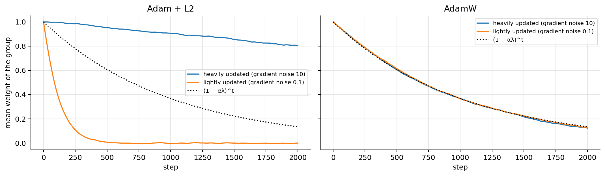
(1-αλ)^2000 = 0.135; exp(-αλ·2000/10) = 0.819With Adam + L2 the heavily-updated weights keep most of their size while the lightly-updated ones are wiped out within a few hundred steps; with AdamW both groups follow \((1-\alpha\lambda)^t\).
8.3 Data augmentation
Apply random, label-preserving transformations to the training inputs, a new random version each epoch: flips, crops, small rotations, colour jitter for images; noise and time shifts for audio (text is harder). The model rarely sees the exact same input twice, which is like having more data, and it builds the desired invariances into the model. Only use transformations that don’t change the label: a horizontal flip is fine for clothes, not for digits (a mirrored 7 is not a 7). Pictures, and a demo, are in NN note 03.
Noise injection is ridge regression in disguise. For a linear model, train on inputs corrupted by independent noise \(\boldsymbol{\epsilon}\sim\mathcal{N}(\mathbf{0},\sigma^2\mathbf{I})\) and average the squared error over the noise: \[ \begin{aligned} \mathbb{E}_{\boldsymbol{\epsilon}}\big[(y-\mathbf{w}^\top(\mathbf{x}+\boldsymbol{\epsilon}))^2\big] &= \mathbb{E}\big[(r-\mathbf{w}^\top\boldsymbol{\epsilon})^2\big] \\ &\quad\small r:=y-\mathbf{w}^\top\mathbf{x}\\ &= r^2-2r\,\mathbf{w}^\top\mathbb{E}[\boldsymbol{\epsilon}]+\mathbf{w}^\top\mathbb{E}[\boldsymbol{\epsilon}\boldsymbol{\epsilon}^\top]\mathbf{w} \\ &\quad\small \text{expand the square}\\ &= r^2+\sigma^2\lVert\mathbf{w}\rVert^2 . \\ &\quad\small \mathbb{E}[\boldsymbol{\epsilon}]=\mathbf{0},\ \mathbb{E}[\boldsymbol{\epsilon}\boldsymbol{\epsilon}^\top]=\sigma^2\mathbf{I} \end{aligned} \] The noisy-input loss \(\frac1{2m}\sum_i\mathbb{E}[\cdot]\) is the ridge loss with \(\lambda=\sigma^2\). For networks the equivalence holds only approximately (Bishop, 1995), but the message carries over: augmentation is a regulariser.
Xn = rng.normal(size=(100, 5)); yn = Xn @ np.array([1.0, -2.0, 0.5, 0.0, 3.0]) + rng.normal(size=100)
sig_n, copies = 0.5, 2000
Xbig = np.repeat(Xn, copies, axis=0) + sig_n * rng.normal(size=(100 * copies, 5)); ybig = np.repeat(yn, copies)
w_noise = np.linalg.lstsq(Xbig, ybig, rcond=None)[0] # least squares on noisy copies
w_ridge = np.linalg.solve(Xn.T @ Xn / 100 + sig_n**2 * np.eye(5), Xn.T @ yn / 100) # ridge, λ = σ²
print("noisy-input fit:", w_noise.round(3)); print("ridge, λ = σ² :", w_ridge.round(3))noisy-input fit: [ 0.858 -1.552 0.371 0.088 2.336]
ridge, λ = σ² : [ 0.858 -1.552 0.368 0.087 2.34 ]8.4 Early stopping, and why it is a regulariser
Monitor the validation loss, keep the best checkpoint, and stop after patience epochs without improvement (the train function of section 6.2 does this). It costs nothing and is almost always on.
Why training time acts like L2. Near a minimum \(\mathbf{w}^*\) of the training loss, approximate \(J\) by a quadratic, \(J(\mathbf{w})\approx J(\mathbf{w}^*)+\frac12(\mathbf{w}-\mathbf{w}^*)^\top\mathbf{H}(\mathbf{w}-\mathbf{w}^*)\), with Hessian \(\mathbf{H}=\mathbf{Q}\,\mathrm{diag}(h_1,\dots,h_p)\,\mathbf{Q}^\top\) (orthonormal eigenvectors \(\mathbf{Q}\), eigenvalues \(h_j>0\)), so \(\nabla J=\mathbf{H}(\mathbf{w}-\mathbf{w}^*)\). Start gradient descent at \(\mathbf{w}_0=\mathbf{0}\) (small initial weights): \[ \begin{aligned} \mathbf{w}_t-\mathbf{w}^* &= \mathbf{w}_{t-1}-\alpha\mathbf{H}(\mathbf{w}_{t-1}-\mathbf{w}^*)-\mathbf{w}^*=(\mathbf{I}-\alpha\mathbf{H})(\mathbf{w}_{t-1}-\mathbf{w}^*) \\ &\quad\small \text{one GD step}\\ &= (\mathbf{I}-\alpha\mathbf{H})^t(\mathbf{w}_0-\mathbf{w}^*)=-(\mathbf{I}-\alpha\mathbf{H})^t\mathbf{w}^* \\ &\quad\small \text{repeat } t \text{ times; } \mathbf{w}_0=\mathbf{0}\\ \tilde w_{t,j} &= \big[1-(1-\alpha h_j)^t\big]\,\tilde w^*_j \\ &\quad\small \text{in eigen-coordinates } \tilde{\mathbf{w}}=\mathbf{Q}^\top\mathbf{w} \end{aligned} \] Ridge instead minimises \(J+\frac\lambda2\lVert\mathbf{w}\rVert^2\): setting the gradient to zero, \(\mathbf{H}(\mathbf{w}-\mathbf{w}^*)+\lambda\mathbf{w}=\mathbf{0}\), so \((\mathbf{H}+\lambda\mathbf{I})\mathbf{w}=\mathbf{H}\mathbf{w}^*\) and, in the same coordinates, \[ \tilde w_{\text{ridge},j}=\frac{h_j}{h_j+\lambda}\,\tilde w^*_j . \] Both shrink every eigen-direction of the solution by a factor between 0 and 1: directions of high curvature (well determined by the data) are kept, flat directions are shrunk. With \((1-\alpha h_j)^t\approx e^{-\alpha h_jt}\) for small \(\alpha h_j\), write \(u=\alpha t\,h_j\) for early stopping and \(u=h_j/\lambda\) for ridge: the two factors are \(1-e^{-u}\) and \(u/(1+u)\), which are both \(\approx u\) for \(u\ll1\) and both \(\to1\) for \(u\gg1\). So \[ \boxed{\text{stopping after } t \text{ steps}\;\approx\;\text{ridge with } \lambda\approx\frac{1}{\alpha t}} \] Training longer is weaker regularisation (Goodfellow, Bengio & Courville, 2016, §7.8). The number of epochs is a regularisation hyperparameter, chosen on the validation set like \(\lambda\).
Numerical illustration. Linear regression with 8 correlated features (\(\mathbf{H}=\frac1m\mathbf{X}^\top\mathbf{X}\)): the coefficients along the gradient-descent path at step \(t\), and the ridge coefficients with \(\lambda=1/(\alpha t)\).
rng_e = np.random.default_rng(1); m_e, n_e = 200, 8
Xe = rng_e.normal(size=(m_e, n_e)) @ rng_e.normal(size=(n_e, n_e)) / np.sqrt(n_e) # correlated features
ye = Xe @ rng_e.normal(size=n_e) + rng_e.normal(scale=2.0, size=m_e)
He, be = Xe.T @ Xe / m_e, Xe.T @ ye / m_e
h_eig = np.linalg.eigvalsh(He); alpha_e = 0.5 / h_eig.max()
ts_e = np.unique(np.logspace(0, 4, 60).astype(int)); th_e, path_gd, t_prev = np.zeros(n_e), [], 0
for t_ in ts_e:
for _ in range(t_ - t_prev): th_e = th_e - alpha_e * (He @ th_e - be)
path_gd.append(th_e.copy()); t_prev = t_
path_gd = np.array(path_gd)
path_ridge = np.array([np.linalg.solve(He + np.eye(n_e) / (alpha_e * t_), be) for t_ in ts_e])
fig, axes = plt.subplots(1, 3, figsize=(14, 3.6))
axes[0].plot(ts_e, path_gd); axes[0].set_xscale("log"); axes[0].set_xlabel("GD step t"); axes[0].set_title("early stopping: w_t")
axes[1].plot(ts_e, path_ridge); axes[1].set_xscale("log"); axes[1].set_xlabel("1/(αλ)"); axes[1].set_title("ridge: w(λ = 1/(αt))")
u = np.logspace(-2, 2, 200)
axes[2].plot(u, 1 - np.exp(-u), label="early stopping: 1 − e^(−u)"); axes[2].plot(u, u / (1 + u), label="ridge: u/(1+u)")
axes[2].set_xscale("log"); axes[2].set_xlabel("u"); axes[2].set_title("shrinkage factor per eigen-direction"); axes[2].legend(fontsize=8)
for ax in axes[:2]: ax.set_ylabel("coefficient")
plt.tight_layout(); plt.show()
print(f"Hessian eigenvalues: {h_eig.round(3)}; alpha = {alpha_e:.3f}")
for k in [15, 30, 45]:
d = np.linalg.norm(path_gd[k] - path_ridge[k]) / np.linalg.norm(path_ridge[k])
print(f"t = {ts_e[k]:5d} (λ = {1/(alpha_e*ts_e[k]):.4f}): ‖w_GD − w_ridge‖ / ‖w_ridge‖ = {d:.2f}")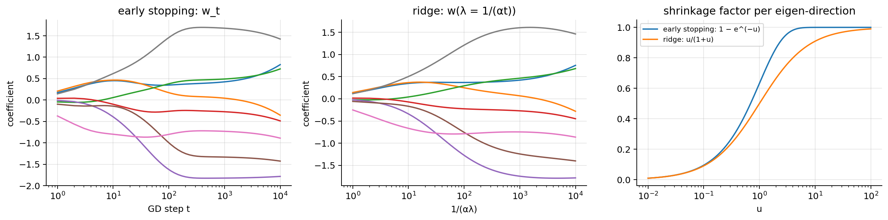
Hessian eigenvalues: [0. 0.112 0.146 0.365 0.788 1.524 2.4 4.35 ]; alpha = 0.115
t = 31 (λ = 0.2806): ‖w_GD − w_ridge‖ / ‖w_ridge‖ = 0.19
t = 322 (λ = 0.0270): ‖w_GD − w_ridge‖ / ‖w_ridge‖ = 0.15
t = 3352 (λ = 0.0026): ‖w_GD − w_ridge‖ / ‖w_ridge‖ = 0.02The two sets of paths have the same shape: coefficients enter in the same order and grow as the regularisation weakens. They do not coincide exactly (the two shrinkage curves differ by up to ~0.2 in the middle), which is why the result is “early stopping behaves like L2”, not “is L2”.
8.5 Dropout
During training, each hidden activation is independently set to 0 with probability \(p\) (the dropout rate), and the survivors are scaled by \(\frac{1}{1-p}\) (inverted dropout): \[ \begin{gathered} \tilde{a}_j=\frac{r_j}{1-p}\,a_j,\qquad r_j\sim\mathrm{Bernoulli}(1-p), \\ \text{independently, a new draw for every example and every mini-batch.} \end{gathered} \]
Try it. Each click on “new mini-batch” draws a new random subset of silenced units; in prediction mode every unit is on and nothing is rescaled.
Expectation is preserved. \[
\mathbb{E}[\tilde a_j]=\frac{a_j}{1-p}\,\mathbb{E}[r_j]=\frac{a_j}{1-p}(1-p)=a_j .
\] So at prediction time the layer is simply switched off (model.eval()): every \(a_j\) passes unchanged and no rescaling is needed. (The original 2014 formulation did not rescale in training and multiplied the weights by \(1-p\) at test time instead; inverted dropout moves that factor into training.)
Variance. \(r_j^2=r_j\) (it is 0 or 1), so \(\mathbb{E}[\tilde a_j^2]=\frac{a_j^2}{(1-p)^2}(1-p)=\frac{a_j^2}{1-p}\) and \[ \mathrm{Var}(\tilde a_j)=\mathbb{E}[\tilde a_j^2]-\big(\mathbb{E}[\tilde a_j]\big)^2=\frac{a_j^2}{1-p}-a_j^2=\frac{p}{1-p}\,a_j^2 . \] For \(p=0.5\) the noise has the same variance as the signal squared.
Dropout as an adaptive L2 penalty. Feed the dropped activations into a linear output \(z=\sum_jw_j\tilde a_j\) with a squared loss. The masks are independent, so \(\mathbb{E}[z]=\sum_jw_ja_j\) and \(\mathrm{Var}(z)=\sum_jw_j^2\frac{p}{1-p}a_j^2\), and \[ \mathbb{E}\big[(y-z)^2\big]=\big(y-\mathbb{E}[z]\big)^2+\mathrm{Var}(z)=\Big(y-\sum_jw_ja_j\Big)^2+\frac{p}{1-p}\sum_jw_j^2a_j^2 \] (bias–variance decomposition of \(\mathbb{E}[(y-z)^2]\)). Averaged over the data, dropout adds a ridge penalty on \(w_j\) weighted by the average \(a_j^2\) of its input (Wager et al., 2013): weights fed by large activations are penalised more.
Why it helps. A unit cannot rely on any particular other unit being present, so the network learns redundant, more robust features. It can also be seen as training an exponentially large ensemble of thinned sub-networks that share weights, and averaging them at test time (compare bagging, ML note 07). Typical \(p\): 0.1–0.5, on dense layers.
At test time: off, and an approximation. The deterministic test network gives the ensemble’s mean pre-activation exactly only for a linear layer; after a non-linearity \(f\), \(\mathbb{E}[f(z)]\ne f(\mathbb{E}[z])\) (Jensen), so “switch off” is an approximation to averaging the thinned networks, and a good one in practice. Monte Carlo dropout (Gal & Ghahramani, 2016) keeps dropout on at prediction time, runs \(T\) stochastic forward passes, and averages the predicted probabilities; the spread of the \(T\) predictions is a cheap (and rough) measure of the model’s uncertainty.
Validation loss below training loss? Normal with dropout: the training loss is measured on the handicapped network (section 11.7).
drop = nn.Dropout(p=0.5); drop.train()
a = torch.full((1_000_000,), 2.0) # an activation a_j = 2, repeated
out = drop(a)
print(f"train mode: mean {out.mean():.4f} (a = 2), variance {out.var():.4f} (p/(1-p)·a² = {0.5/0.5*4:.1f}), "
f"zeros {(out == 0).float().mean():.3f}")
drop.eval(); print("eval mode: identity?", torch.equal(drop(a), a))train mode: mean 2.0013 (a = 2), variance 4.0000 (p/(1-p)·a² = 4.0), zeros 0.500
eval mode: identity? True8.6 The regularisers on the digits
results = {"no regularisation": hist_plain}
torch.manual_seed(0); m_wd = make_mlp()
results["AdamW, weight decay 0.05"], _ = train(m_wd, torch.optim.AdamW(m_wd.parameters(), lr=1e-3, weight_decay=0.05))
torch.manual_seed(0); m_do = make_mlp(p_drop=0.5)
results["dropout p=0.5"], _ = train(m_do, torch.optim.Adam(m_do.parameters(), lr=1e-3))
torch.manual_seed(0); m_es = make_mlp()
results["early stopping (patience 10)"], best_state = train(m_es, torch.optim.Adam(m_es.parameters(), lr=1e-3), patience=10)
m_es.load_state_dict(best_state)
fig, axes = plt.subplots(1, 2, figsize=(13, 4))
for name, h in results.items():
axes[0].plot(h["val_loss"], label=name); axes[1].plot(h["val_acc"], label=name)
axes[0].set_yscale("log"); axes[0].set_ylabel("validation loss"); axes[1].set_ylabel("validation accuracy")
for ax in axes: ax.set_xlabel("epoch"); ax.legend(fontsize=8)
axes[1].set_ylim(0.9, 1.0); plt.tight_layout(); plt.show()
for name, mdl in [("no regularisation", model), ("weight decay", m_wd), ("dropout", m_do), ("early stopping (best ckpt)", m_es)]:
tl, ta = evaluate(mdl, test_loader, nn.CrossEntropyLoss())
print(f"{name:>28}: test loss {tl:.3f} test accuracy {ta:.3f}")
print(f"early stopping stopped after {len(results['early stopping (patience 10)']['val_loss'])} epochs")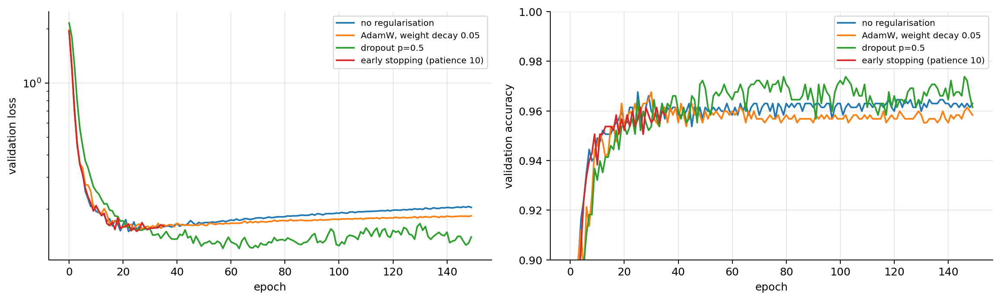
no regularisation: test loss 0.137 test accuracy 0.972
weight decay: test loss 0.135 test accuracy 0.974
dropout: test loss 0.117 test accuracy 0.975
early stopping (best ckpt): test loss 0.124 test accuracy 0.965
early stopping stopped after 36 epochsWith only 500 training images, the unregularised validation loss reaches its minimum after about 20 epochs and then climbs (section 7). Weight decay 0.05 with AdamW only slows the climb; dropout lowers the whole validation curve; early stopping keeps the checkpoint at the minimum and stops. On the test set, dropout and early stopping lower the loss, weight decay barely changes it, and the test accuracies all stay within about one point of each other. The unregularised model mostly becomes over-confident rather than wrong: its argmax is still right, but its probabilities are too extreme, which the loss punishes and accuracy does not see. That is the same lesson as boosting in ML note 07. Early stopping on the validation loss gives the lowest accuracy here: the checkpoint with the best loss is not the one with the best accuracy, so monitor the metric you care about. On harder problems, or with less data, regularisation changes the accuracy as well.
MC dropout on the dropout model. Averaging 50 stochastic passes gives about the same accuracy as the deterministic network, and the spread of the passes separates confident from ambiguous test images:
Xte_t, yte_t = torch.tensor(X_te), torch.tensor(y_te)
with torch.no_grad():
m_do.eval(); p_det = torch.softmax(m_do(Xte_t), 1)
m_do.train(); torch.manual_seed(1)
p_mc = torch.stack([torch.softmax(m_do(Xte_t), 1) for _ in range(50)]) # (50, N, 10)
m_do.eval()
p_mean = p_mc.mean(0); pred = p_mean.argmax(1)
spread = p_mc.std(0).gather(1, pred[:, None]).squeeze(1) # sd of the winning probability
print(f"accuracy: deterministic {(p_det.argmax(1) == yte_t).float().mean():.3f}, MC average {(pred == yte_t).float().mean():.3f}")
print(f"mean sd of the predicted probability: correct predictions {spread[pred == yte_t].mean():.3f}, "
f"errors {spread[pred != yte_t].mean():.3f}")accuracy: deterministic 0.975, MC average 0.972
mean sd of the predicted probability: correct predictions 0.046, errors 0.2879. Normalisation layers
In gradient-based training it helps to put all inputs on a common scale (ML note 01: conditioning). Batch normalisation (Ioffe & Szegedy, 2015) applies the same idea inside the network, at every layer, on every mini-batch.
9.1 BatchNorm: the forward pass
Take one unit (one feature) and its pre-activations \(z_1,\dots,z_B\) over a mini-batch of \(B\) examples (the slides write \(m\) for this batch size). BatchNorm standardises them with the batch’s own statistics, then puts them on a new scale with two learnable parameters \(\gamma,\beta\): \[ \mu_{\mathcal{B}}=\frac1B\sum_{i=1}^Bz_i,\qquad \sigma^2_{\mathcal{B}}=\frac1B\sum_{i=1}^B(z_i-\mu_{\mathcal{B}})^2,\qquad \hat z_i=\frac{z_i-\mu_{\mathcal{B}}}{\sqrt{\sigma^2_{\mathcal{B}}+\varepsilon}},\qquad y_i=\gamma\,\hat z_i+\beta . \] Every unit \(j\) has its own \(\mu,\sigma^2\) and its own \(\gamma_j,\beta_j\) (so 2 parameters per unit); \(\varepsilon\approx10^{-5}\) avoids dividing by zero. With \(\gamma=\sqrt{\sigma^2_{\mathcal{B}}+\varepsilon}\) and \(\beta=\mu_{\mathcal{B}}\) the layer could undo itself, so it never removes representational power; it lets the network choose the scale of each unit instead of inheriting it from the layers below.
- Effect: higher learning rates, faster and more stable training, a mild regularisation (each example’s output depends on the random batch it is in). The original motivation (“internal covariate shift”) is debated; a well-supported view is that BN makes the loss smoother, so larger steps are safe (Santurkar et al., 2018).
- Where: usually
Linear/Conv → BatchNorm → ReLU. A bias in the layer just before BN is useless: \((z_i+b)-\mu(z+b)=z_i-\mu(z)\), so it cancels; usebias=False. In CNNs, one \(\gamma,\beta\) per channel, and the statistics are taken over batch × height × width (BatchNorm2d).
Try it. A unit’s pre-activations over one mini-batch (400 values with mean 3.02 and standard deviation 2.63). After normalisation they have mean 0 and standard deviation 1 whatever they looked like; then \(\gamma\) and \(\beta\) (learned) put them wherever the next layer prefers: mean \(\beta\), standard deviation \(|\gamma|\).
9.2 BatchNorm: the backward pass
Backprop through BN is the chain rule on a small graph in which every \(z_i\) affects every output, through \(\mu_{\mathcal{B}}\) and \(\sigma^2_{\mathcal{B}}\). Write \(s=\sqrt{\sigma^2_{\mathcal{B}}+\varepsilon}\) and let \(\frac{\partial L}{\partial y_i}\) be the upstream gradients (from the layer above).
Parameters. \(y_i=\gamma\hat z_i+\beta\) and \(\gamma,\beta\) are shared by all \(i\), so their gradients add up over the batch: \[ \frac{\partial L}{\partial\beta}=\sum_{i=1}^B\frac{\partial L}{\partial y_i},\qquad \frac{\partial L}{\partial\gamma}=\sum_{i=1}^B\frac{\partial L}{\partial y_i}\,\hat z_i . \]
Step 1, the normalised values. \(\dfrac{\partial L}{\partial\hat z_i}=\dfrac{\partial L}{\partial y_i}\,\gamma\) (from \(y_i=\gamma\hat z_i+\beta\)).
Step 2, the variance. \(\sigma^2_{\mathcal{B}}\) enters every \(\hat z_i=(z_i-\mu_{\mathcal{B}})(\sigma^2_{\mathcal{B}}+\varepsilon)^{-1/2}\): \[ \frac{\partial L}{\partial\sigma^2_{\mathcal{B}}}=\sum_{i=1}^B\frac{\partial L}{\partial\hat z_i}\,(z_i-\mu_{\mathcal{B}})\cdot\Big(-\frac12\Big)(\sigma^2_{\mathcal{B}}+\varepsilon)^{-3/2} \qquad\text{(power rule on } (\cdot)^{-1/2}\text{).} \]
Step 3, the mean. \(\mu_{\mathcal{B}}\) enters every \(\hat z_i\) directly (derivative \(-1/s\)) and also \(\sigma^2_{\mathcal{B}}\): \[ \frac{\partial L}{\partial\mu_{\mathcal{B}}}=\sum_{i=1}^B\frac{\partial L}{\partial\hat z_i}\Big(-\frac1s\Big)+\frac{\partial L}{\partial\sigma^2_{\mathcal{B}}}\cdot\underbrace{\frac1B\sum_{i=1}^B-2(z_i-\mu_{\mathcal{B}})}_{=\,0\ \text{(deviations from the mean sum to 0)}} =-\frac1s\sum_{i=1}^B\frac{\partial L}{\partial\hat z_i}. \]
Step 4, the inputs. \(z_i\) reaches the loss through three paths: \(\hat z_i\) directly (derivative \(1/s\)), \(\sigma^2_{\mathcal{B}}\) (derivative \(2(z_i-\mu_{\mathcal{B}})/B\)) and \(\mu_{\mathcal{B}}\) (derivative \(1/B\)). The multivariate chain rule adds them: \[ \frac{\partial L}{\partial z_i}=\frac{\partial L}{\partial\hat z_i}\,\frac1s+\frac{\partial L}{\partial\sigma^2_{\mathcal{B}}}\,\frac{2(z_i-\mu_{\mathcal{B}})}{B}+\frac{\partial L}{\partial\mu_{\mathcal{B}}}\,\frac1B . \]
Simplify. Substitute steps 2 and 3, and use \((z_k-\mu_{\mathcal{B}})/s=\hat z_k\): \[ \begin{aligned} \frac{\partial L}{\partial\sigma^2_{\mathcal{B}}}\,\frac{2(z_i-\mu_{\mathcal{B}})}{B} &= -\frac{1}{B\,s}\,\hat z_i\sum_{k}\frac{\partial L}{\partial\hat z_k}\hat z_k \\ &\quad\small (z_k-\mu)(z_i-\mu)(\sigma^2+\varepsilon)^{-3/2}=\hat z_k\hat z_i/s\\ \frac{\partial L}{\partial\mu_{\mathcal{B}}}\,\frac1B &= -\frac{1}{B\,s}\sum_{k}\frac{\partial L}{\partial\hat z_k} \\ &\quad\small \text{step 3}\\ \frac{\partial L}{\partial z_i} &= \frac{\gamma}{B\,s}\Big[B\,\frac{\partial L}{\partial y_i}-\sum_{k=1}^B\frac{\partial L}{\partial y_k}-\hat z_i\sum_{k=1}^B\frac{\partial L}{\partial y_k}\,\hat z_k\Big]. \\ &\quad\small \text{add the three; step 1} \end{aligned} \]
What it says. The upstream gradient is centred (minus its batch mean) and has its component along \(\hat{\mathbf{z}}\) removed. Summing the bracket over \(i\) gives \(B\sum_k\frac{\partial L}{\partial y_k}-B\sum_k\frac{\partial L}{\partial y_k}-0=0\) (because \(\sum_i\hat z_i=0\)): the gradient with respect to the inputs always sums to zero over the batch. Shifting all \(z_i\) by the same amount cannot change the loss, since BN subtracts the mean, so the gradient has no component in that direction. The same holds for rescaling (the gradient is orthogonal to \(\hat{\mathbf{z}}\) when \(\varepsilon=0\)): the weights feeding a BN layer are scale-invariant.
We implement the forward and backward passes and compare with PyTorch’s autograd, in double precision:
def bn_forward(z, gamma, beta, eps=1e-5): # z: (B, n)
mu = z.mean(0); var = z.var(0, unbiased=False); s = torch.sqrt(var + eps)
zhat = (z - mu) / s
return gamma * zhat + beta, (zhat, s)
def bn_backward(dy, gamma, cache): # dy = dL/dy, shape (B, n)
zhat, s = cache; B = dy.shape[0]
dgamma, dbeta = (dy * zhat).sum(0), dy.sum(0)
dz = gamma / (B * s) * (B * dy - dy.sum(0) - zhat * (dy * zhat).sum(0))
return dz, dgamma, dbeta
torch.manual_seed(0)
z = (3 + 2 * torch.randn(16, 5, dtype=torch.float64)).requires_grad_()
gamma = torch.rand(5, dtype=torch.float64, requires_grad=True); beta = torch.randn(5, dtype=torch.float64, requires_grad=True)
y, cache = bn_forward(z, gamma, beta)
dy = torch.randn_like(y) # any upstream gradient
(y * dy).sum().backward() # autograd: dL/dy = dy
dz, dgamma, dbeta = bn_backward(dy, gamma.detach(), (cache[0].detach(), cache[1].detach()))
y_torch = F.batch_norm(z, None, None, gamma, beta, training=True, eps=1e-5)
print(f"forward vs F.batch_norm : {(y - y_torch).abs().max():.1e}")
print(f"dL/dz vs autograd : {(dz - z.grad).abs().max():.1e}")
print(f"dL/dgamma, dL/dbeta : {(dgamma - gamma.grad).abs().max():.1e}, {(dbeta - beta.grad).abs().max():.1e}")
print(f"sum over the batch of dL/dz (per unit): {dz.sum(0).abs().max():.1e}")forward vs F.batch_norm : 5.6e-16
dL/dz vs autograd : 1.1e-16
dL/dgamma, dL/dbeta : 0.0e+00, 0.0e+00
sum over the batch of dL/dz (per unit): 4.2e-169.3 Training mode and evaluation mode: running statistics
At prediction time there may be a single example, and a prediction should not depend on which other examples happen to be in the batch. So BN keeps running averages of the batch statistics during training and uses them in evaluation mode: \[
\text{training: }\ \hat z_i=\frac{z_i-\mu_{\mathcal{B}}}{\sqrt{\sigma^2_{\mathcal{B}}+\varepsilon}},\qquad
\text{evaluation: }\ \hat z=\frac{z-\mu_{\text{run}}}{\sqrt{\sigma^2_{\text{run}}+\varepsilon}},
\] \[
\mu_{\text{run}}\leftarrow(1-\rho)\,\mu_{\text{run}}+\rho\,\mu_{\mathcal{B}},\qquad
\sigma^2_{\text{run}}\leftarrow(1-\rho)\,\sigma^2_{\text{run}}+\rho\,\frac{B}{B-1}\,\sigma^2_{\mathcal{B}} .
\] This is an EMA (section 4.1) with \(\beta=1-\rho\); PyTorch calls \(\rho\) momentum (default \(0.1\), so \(\beta=0.9\)), starts from \(\mu_{\text{run}}=0\), \(\sigma^2_{\text{run}}=1\), uses the unbiased variance \(\frac{B}{B-1}\sigma^2_{\mathcal{B}}\), and applies no bias correction (after 50 batches the initial values weigh \(0.9^{50}\approx0.5\,\%\)). model.train() / model.eval() switch between the two formulas. We check the update rule on three batches:
bn = nn.BatchNorm1d(3); bn.train(); rho = bn.momentum
mu_run, var_run = torch.zeros(3), torch.ones(3)
for k in range(3):
xb = 5 + 2 * torch.randn(8, 3)
bn(xb) # a forward pass in training mode updates the stats
mu_run = (1 - rho) * mu_run + rho * xb.mean(0)
var_run = (1 - rho) * var_run + rho * xb.var(0, unbiased=True)
print(f"running mean: by hand {mu_run.numpy().round(4)} PyTorch {bn.running_mean.numpy().round(4)}")
print(f"running var : by hand {var_run.numpy().round(4)} PyTorch {bn.running_var.numpy().round(4)}")running mean: by hand [1.3421 1.3932 1.6376] PyTorch [1.3421 1.3932 1.6376]
running var : by hand [1.4705 2.0456 2.4511] PyTorch [1.4705 2.0456 2.4511]9.4 BatchNorm pitfalls, with demos
We train an MLP with BatchNorm (64 → 128 → 128 → 10, BN before each ReLU) on the digits, then evaluate it in different ways.
def make_norm_mlp(norm="bn", p_drop=0.0):
N = (lambda d: nn.BatchNorm1d(d)) if norm == "bn" else (lambda d: nn.LayerNorm(d))
return nn.Sequential(nn.Linear(64, 128), N(128), nn.ReLU(), nn.Dropout(p_drop),
nn.Linear(128, 128), N(128), nn.ReLU(), nn.Linear(128, 10))
def fit(model, B=32, epochs=30, lr=1e-3, seed=0, X=X_tr, y=y_tr):
torch.manual_seed(seed)
loader = DataLoader(to_ds(X, y), batch_size=B, shuffle=True, drop_last=True,
generator=torch.Generator().manual_seed(seed))
opt = torch.optim.Adam(model.parameters(), lr=lr)
for _ in range(epochs):
model.train()
for xb, yb in loader:
opt.zero_grad(); F.cross_entropy(model(xb), yb).backward(); opt.step()
return model.eval()
def acc_in_mode(model, X, y, mode, bs):
"""Accuracy with the model in 'train' or 'eval' mode, predicting in batches of bs (full batches only)."""
model.train(mode == "train"); n = len(y) - len(y) % bs; correct = 0
with torch.no_grad():
for i in range(0, n, bs): correct += (model(X[i:i + bs]).argmax(1) == y[i:i + bs]).sum().item()
model.eval(); return correct / n
import copy
torch.manual_seed(0); bn_net = fit(make_norm_mlp("bn"))
order = torch.argsort(yte_t) # test set sorted by class
cases = [("eval mode, one image at a time", "eval", 1, False), ("eval mode, all at once", "eval", 649, False),
("train mode, all 649 at once", "train", 649, False), ("train mode, batches of 8", "train", 8, False),
("train mode, batches of 2", "train", 2, False), ("train mode, batches of 32 sorted by class", "train", 32, True),
("eval mode, batches of 32 sorted by class", "eval", 32, True)]
for name, mode, bs, srt in cases:
Xc, yc = (Xte_t[order], yte_t[order]) if srt else (Xte_t, yte_t)
print(f"{name:44s} test accuracy {acc_in_mode(copy.deepcopy(bn_net), Xc, yc, mode, bs):.3f}")
probe = copy.deepcopy(bn_net); rm0 = probe[1].running_mean.clone()
acc_in_mode(probe, Xte_t[order], yte_t[order], "train", 32)
print(f"after that train-mode pass (under no_grad!), the running mean moved by up to {(probe[1].running_mean - rm0).abs().max():.3f}")eval mode, one image at a time test accuracy 0.978
eval mode, all at once test accuracy 0.978
train mode, all 649 at once test accuracy 0.978
train mode, batches of 8 test accuracy 0.900
train mode, batches of 2 test accuracy 0.590
train mode, batches of 32 sorted by class test accuracy 0.220
eval mode, batches of 32 sorted by class test accuracy 0.978
after that train-mode pass (under no_grad!), the running mean moved by up to 0.038(a) Forgetting model.eval(). In evaluation mode the prediction of an image does not depend on its batch: one at a time or all at once give the same accuracy. In training mode each image is normalised with the statistics of its batch. A large, representative batch is harmless, but small batches cost accuracy, and a batch that contains only one class is a disaster: the per-batch standardisation removes exactly the information that says which class it is. A forward pass in training mode also changes the running statistics, even under torch.no_grad(), so evaluating in the wrong mode silently damages the model for later use. (With a batch of one, BatchNorm1d in training mode raises an error: the variance of one number is 0.)
(b) Tiny batches. The batch mean is itself a mini-batch estimate, with standard deviation \(\sigma/\sqrt{B}\) (section 2.4), so with \(B=2\) the normalisation is very noisy in training and very different from the running statistics used at test time. LayerNorm (section 9.5) does not use the batch at all. The same network trained with BN and with LayerNorm, for batch sizes 2, 4 and 32 (same number of updates):
for norm in ["bn", "ln"]:
accs = []
for B_ in [2, 4, 32]:
net_ = fit(make_norm_mlp(norm), B=B_, epochs=max(2, 30 * B_ // 32))
accs.append(acc_in_mode(net_, Xte_t, yte_t, "eval", 649))
print(f"{'BatchNorm' if norm == 'bn' else 'LayerNorm':9s}: test accuracy for B = 2, 4, 32: " + ", ".join(f"{a:.3f}" for a in accs))BatchNorm: test accuracy for B = 2, 4, 32: 0.764, 0.938, 0.978
LayerNorm: test accuracy for B = 2, 4, 32: 0.917, 0.945, 0.968With \(B=2\) BatchNorm loses about 20 points of accuracy against \(B=32\); LayerNorm, which never looks at the batch, loses much less (part of its drop is just the noisier optimisation with tiny batches at the same \(\alpha\)). At \(B=32\) BatchNorm is slightly better. Remedies when the batch must be small (large images, 3-D scans, fine-tuning on one GPU): LayerNorm or GroupNorm (statistics over groups of channels of one example), freezing the BN statistics of a pre-trained network (NN note 03), or synchronising BN across GPUs.
(c) Dropout before BatchNorm: the variance shift. Inverted dropout keeps the mean of an activation but inflates its variance by the factor computed in section 8.5. A BN layer placed after a dropout layer collects its running variance in training mode, with dropout on; at test time dropout is off, the variance of its input is smaller, and BN divides by a variance that is too large (Li et al., 2019). Measure it with a forward hook on the BN input:
def variance_shift(order_name, p=0.5):
torch.manual_seed(0)
if order_name == "dropout → BN":
net_ = nn.Sequential(nn.Linear(64, 256), nn.ReLU(), nn.Dropout(p), nn.Linear(256, 256),
nn.BatchNorm1d(256), nn.ReLU(), nn.Linear(256, 10)); k = 4
else:
net_ = nn.Sequential(nn.Linear(64, 256), nn.ReLU(), nn.Linear(256, 256), nn.BatchNorm1d(256),
nn.ReLU(), nn.Dropout(p), nn.Linear(256, 10)); k = 3
fit(net_); feats = {}
hook = net_[k].register_forward_hook(lambda mod, inp, out: feats.__setitem__("z", inp[0]))
with torch.no_grad():
net_.train(); net_(Xtr_t); var_train = feats["z"].var(0) # BN input, dropout on
net_.eval(); net_(Xtr_t); var_eval = feats["z"].var(0) # BN input, dropout off
acc = (net_(Xte_t).argmax(1) == yte_t).float().mean().item()
hook.remove()
print(f"{order_name:13s}: Var(BN input) eval/train = {(var_eval / var_train).mean():.3f}; "
f"running var / true eval var = {(net_[k].running_var / var_eval).mean():.3f}; test accuracy {acc:.3f}")
for o in ["dropout → BN", "BN → dropout"]: variance_shift(o)dropout → BN : Var(BN input) eval/train = 0.749; running var / true eval var = 1.368; test accuracy 0.977
BN → dropout : Var(BN input) eval/train = 1.000; running var / true eval var = 0.998; test accuracy 0.985With dropout (\(p=0.5\)) before BatchNorm, the variance of the BN input at test time is only about three quarters of its training value, so the running variance is about 1.37 times too large and every normalised activation is shrunk by \(1/\sqrt{1.37}\approx0.85\) at test time. With BatchNorm first and dropout after it, the statistics match (ratio 1.000). On this small problem the accuracy cost is under one point (one seed); in deep networks with many such layers it adds up. Rule: put dropout after the last BatchNorm (typically only before the final classifier), or do not combine them.
9.5 LayerNorm: the per-example alternative
LayerNorm (Ba et al., 2016) computes the mean and variance over the features of each example, instead of over the batch for each feature: \[ \mu_i=\frac1n\sum_{j=1}^nz_{ij},\qquad\sigma_i^2=\frac1n\sum_{j=1}^n(z_{ij}-\mu_i)^2,\qquad y_{ij}=\gamma_j\,\frac{z_{ij}-\mu_i}{\sqrt{\sigma_i^2+\varepsilon}}+\beta_j . \] It is independent of the batch size and of the other examples, and identical in training and evaluation (no running statistics). That is why it is the standard in transformers (NN note 05) and RNNs, where sequences have different lengths and batches can be small. BatchNorm remains the standard in CNNs. Both end with the same learnable \(\gamma\hat z+\beta\).
ln = nn.LayerNorm(6); zz = torch.randn(4, 6) * 3 + 1
manual = (zz - zz.mean(1, keepdim=True)) / torch.sqrt(zz.var(1, unbiased=False, keepdim=True) + ln.eps)
print(f"LayerNorm vs manual: {(ln(zz) - manual).abs().max():.1e}; row means {ln(zz).mean(1).detach().numpy().round(6)}")
ln.train(); a1 = ln(zz); ln.eval(); print("identical in train and eval mode:", torch.equal(a1, ln(zz)))LayerNorm vs manual: 2.4e-07; row means [-0. 0. -0. -0.]
identical in train and eval mode: True10. Other layers and practicalities
| Layer | PyTorch | What it does | Parameters? |
|---|---|---|---|
| Fully connected | nn.Linear |
\(\mathbf{Z}=\mathbf{A}\mathbf{W}+\mathbf{b}\) | yes |
| Activation | nn.ReLU, nn.GELU, nn.Sigmoid |
element-wise non-linearity | no |
| Dropout | nn.Dropout(p) |
switches units off in training | no |
| Batch / layer norm | nn.BatchNorm1d/2d, nn.LayerNorm |
normalise, then scale by \(\gamma\) and shift by \(\beta\) | 2 per feature |
| Convolution, pooling | nn.Conv2d, nn.MaxPool2d |
local, shared filters for images (NN note 03) | conv yes, pool no |
| Flatten | nn.Flatten |
tensor → vector, before the dense head | no |
| Embedding | nn.Embedding |
token id → learned vector (NN notes 04–05) | yes |
| Recurrent | nn.LSTM, nn.GRU |
sequences with a hidden state (NN note 04) | yes |
| Attention | nn.MultiheadAttention |
mixes information between positions (NN note 05) | yes |
| Residual connection | x + f(x) in forward |
a direct path for the gradient | no |
Any layer is fine as long as it is differentiable (almost everywhere): autograd does the rest.
- Gradient clipping. If the norm of the whole gradient (all parameters concatenated) exceeds a threshold \(c\), rescale it: \(\mathbf{g}\leftarrow c\,\mathbf{g}/\lVert\mathbf{g}\rVert\). The direction is kept and only the length is capped, so one huge gradient (RNNs, fine-tuning, a bad batch) cannot wreck the weights. Call
torch.nn.utils.clip_grad_norm_(model.parameters(), c)betweenbackward()andstep(); \(c=1\) is a common default for RNNs and transformers. - Normalise the inputs: standardise features, or scale pixels to \([0,1]\) and then use the mean and standard deviation of the pre-training data for pre-trained models. Same reason as for linear models: conditioning (section 11.2 shows what happens otherwise).
- Mixed precision (float16/bfloat16) roughly halves memory and speeds up training on modern GPUs (
torch.autocast). - Seeds for reproducibility: section 12.5.
torch.manual_seed(0); net_c = make_mlp()
F.cross_entropy(net_c(Xtr_t[:32]), ytr_t[:32]).backward()
norm_before = torch.sqrt(sum((p.grad ** 2).sum() for p in net_c.parameters()))
returned = torch.nn.utils.clip_grad_norm_(net_c.parameters(), max_norm=0.1) # returns the norm before clipping
norm_after = torch.sqrt(sum((p.grad ** 2).sum() for p in net_c.parameters()))
print(f"global gradient norm {norm_before:.4f} (returned: {returned:.4f}) -> after clipping to 0.1: {norm_after:.4f}")global gradient norm 0.4647 (returned: 0.4647) -> after clipping to 0.1: 0.100011. What to do when… a debugging guide
The loss curve is the main diagnostic. The recipe of the slides, then each situation in detail: symptom → checks → causes → fixes, with a small demo where one fits.
| Symptom | Likely cause | What to try |
|---|---|---|
| Loss is NaN / explodes | learning rate too high, exploding gradients, \(\log(0)\) | lower \(\alpha\) 10×, clip gradients, use the “WithLogits” losses |
| Loss flat from the start | \(\alpha\) too low, dead ReLUs, a bug (wrong labels, no shuffling, forgot zero_grad) |
overfit a single mini-batch first: it must reach ~0 loss |
| Train loss ≈ chance level (\(\log K\)) | inputs not normalised, labels misaligned with inputs | check x.mean(), x.std(), look at a few \((x,y)\) pairs |
| Train good, validation bad | overfitting | augmentation, dropout, weight decay, smaller net, more data, early stopping |
| Both bad, and close | underfitting | bigger net, train longer, higher \(\alpha\), better features / architecture |
| Great in training, terrible at test time | forgot model.eval() (BatchNorm / dropout), different preprocessing |
same transforms at train and test; call eval() |
| Validation loss below training loss | dropout / augmentation only act in training | normal; compare accuracy instead |
Golden rule: make the pipeline work on a tiny problem (one batch, a small network) before scaling anything up.
def quick_run(X=X_tr, y=y_tr, lr=0.05, opt="sgd", momentum=0.0, epochs=5, shuffle=True, seed=0, clip=None, net_=None):
"""Train an MLP; return the per-iteration training losses and the model."""
torch.manual_seed(seed); net_ = net_ or make_mlp()
o = (torch.optim.SGD(net_.parameters(), lr=lr, momentum=momentum) if opt == "sgd"
else torch.optim.Adam(net_.parameters(), lr=lr))
loader = DataLoader(to_ds(X, y), batch_size=32, shuffle=shuffle, generator=torch.Generator().manual_seed(seed))
losses = []
for _ in range(epochs):
net_.train()
for xb, yb in loader:
o.zero_grad(); loss = F.cross_entropy(net_(xb), yb); loss.backward()
if clip: torch.nn.utils.clip_grad_norm_(net_.parameters(), clip)
o.step(); losses.append(loss.item())
return np.array(losses), net_.eval()
def val_acc(net_, X=X_va, y=y_va):
with torch.no_grad(): return (net_(torch.tensor(X)).argmax(1).numpy() == y).mean()11.1 The loss does not decrease
Symptom. The training loss stays at its initial value, or creeps down very slowly.
Checks, in this order.
- The initial loss. At initialisation the logits are small, the softmax is close to uniform, and the cross-entropy is \(-\log(1/K)=\log K\): \(\log10=2.303\) for the digits. A very different initial value means something is wrong before training starts (section 11.2).
- Overfit one mini-batch. A correct model and loop must drive the loss on 10–20 fixed examples to about 0 in a few hundred steps. If it cannot, there is a bug in the model, the loss or the loop, not a lack of data.
- Gradients. After
loss.backward(), printp.grad.norm()for each layer: all zeros means the graph is broken (a.detach(), a.item(), a non-differentiable operation) or the units are dead. - The learning rate: a range test (section 3).
torch.manual_seed(0)
print(f"initial loss of the untrained MLP: {F.cross_entropy(make_mlp()(Xtr_t), ytr_t).item():.3f} (log 10 = {np.log(10):.3f})")
xb1, yb1 = Xtr_t[:16], ytr_t[:16] # one fixed mini-batch
def overfit_one_batch(variant, steps=200):
torch.manual_seed(0); net_ = make_mlp(); o = torch.optim.Adam(net_.parameters(), lr=1e-3); L = []
for _ in range(steps):
o.zero_grad(); out = net_(xb1)
if variant == "softmax before CrossEntropyLoss": out = torch.softmax(out, dim=1) # bug: double softmax
loss = F.cross_entropy(out, yb1); loss.backward()
if variant != "forgot optimizer.step()": o.step()
L.append(loss.item())
return np.array(L)
plt.figure(figsize=(7, 3.4))
for v in ["correct", "softmax before CrossEntropyLoss", "forgot optimizer.step()"]:
L = overfit_one_batch(v); plt.plot(L, label=v); print(f"{v:32s}: loss after 200 steps {L[-1]:.4f}")
plt.yscale("log"); plt.xlabel("step"); plt.ylabel("loss on the batch"); plt.legend(fontsize=8)
plt.title("Overfit one mini-batch of 16 images"); plt.tight_layout(); plt.show()
print(f"floor of the double-softmax bug: log(1 + 9/e) = {np.log(1 + 9 / np.e):.4f}")initial loss of the untrained MLP: 2.311 (log 10 = 2.303)
correct : loss after 200 steps 0.0010
softmax before CrossEntropyLoss : loss after 200 steps 1.4758
forgot optimizer.step() : loss after 200 steps 2.3299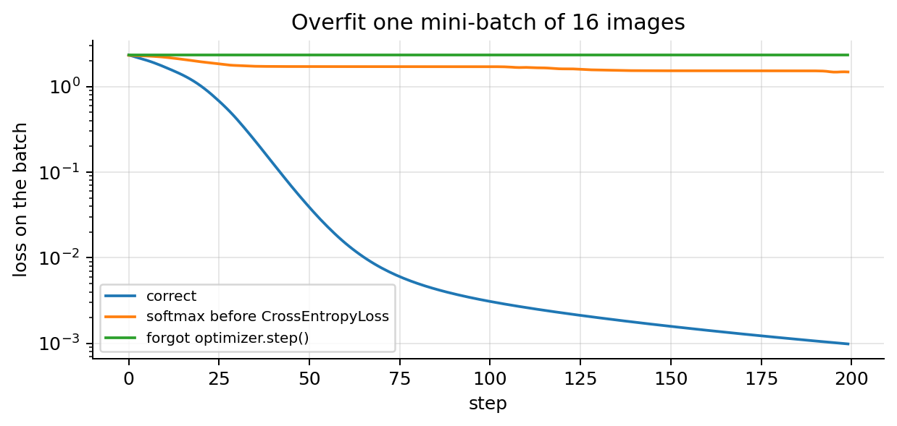
floor of the double-softmax bug: log(1 + 9/e) = 1.4612The correct loop drives the loss towards 0. Forgetting optimizer.step() leaves it flat. Applying a softmax before CrossEntropyLoss (which applies its own log-softmax) can never get below a floor: the “logits” it receives are probabilities in \([0,1]\), so the best case is \(1\) for the true class and \(0\) for the other nine, giving \(-\log\frac{e^{1}}{e^{1}+9e^{0}}=\log(1+9/e)=1.461\).
Forgetting zero_grad() is not caught by this test. PyTorch accumulates: each backward() adds to .grad.
torch.manual_seed(0); net_ = make_mlp()
F.cross_entropy(net_(Xtr_t[:16]), ytr_t[:16]).backward(); gA = net_[0].weight.grad.clone(); net_.zero_grad()
F.cross_entropy(net_(Xtr_t[16:32]), ytr_t[16:32]).backward(); gB = net_[0].weight.grad.clone() # no zero_grad after this
F.cross_entropy(net_(Xtr_t[:16]), ytr_t[:16]).backward()
print(f"max |.grad - (g_B + g_A)| = {(net_[0].weight.grad - (gA + gB)).abs().max():.1e}")max |.grad - (g_B + g_A)| = 0.0e+00So without zero_grad() step \(t\) uses \(\mathbf{g}_1+\dots+\mathbf{g}_t\): momentum with \(\beta=1\) (section 4.2), which never forgets. On one fixed batch that only speeds things up; on real data the step keeps growing and training oscillates or diverges. (The same accumulation, used on purpose with a zero_grad() every \(k\) mini-batches, is gradient accumulation: a batch \(k\) times larger than fits in memory.)
Other causes and fixes: \(\alpha\) far too low (range test); dead ReLUs after a too-large step (section 11.3; lower \(\alpha\), check the initialisation of NN note 01, or use LeakyReLU/GELU); labels that do not match the inputs (section 11.2); a frozen layer (requires_grad=False left on).
11.2 The training loss stays near chance level \(\log K\)
Symptom. The loss hovers around \(\log K\), accuracy near \(1/K\).
Check 1: the inputs. Print x.mean(), x.std() per feature (or per channel). Unnormalised inputs make the first pre-activations huge, so the initial loss is far above \(\log K\), and a learning rate that is fine for standardised inputs diverges (ML note 01: the curvature grows with the square of the input scale). Below, the same digits with pixels in \(0\)–\(255\) instead of \([0,1]\):
X_raw_tr, X_raw_va = (X_tr * 255).astype(np.float32), (X_va * 255).astype(np.float32)
torch.manual_seed(0)
print(f"initial loss: pixels in [0,1] {F.cross_entropy(make_mlp()(Xtr_t), ytr_t).item():.2f}, "
f"pixels in 0-255 {F.cross_entropy(make_mlp()(torch.tensor(X_raw_tr)), ytr_t).item():.2f}")
for name, Xa, Xv, lr in [("[0,1], SGD α = 0.05", X_tr, X_va, 0.05), ("0-255, SGD α = 0.05", X_raw_tr, X_raw_va, 0.05),
("0-255, SGD α = 0.001", X_raw_tr, X_raw_va, 0.001)]:
L, net_ = quick_run(Xa, lr=lr, epochs=20)
print(f"{name:22s}: final training loss {L[-1]:.4f}, finite throughout: {np.isfinite(L).all()}, "
f"validation accuracy {val_acc(net_, Xv):.3f}")initial loss: pixels in [0,1] 2.31, pixels in 0-255 14.39
[0,1], SGD α = 0.05 : final training loss 0.5640, finite throughout: True, validation accuracy 0.906
0-255, SGD α = 0.05 : final training loss nan, finite throughout: False, validation accuracy 0.099
0-255, SGD α = 0.001 : final training loss 0.0042, finite throughout: True, validation accuracy 0.937With the raw pixels the initial loss is about six times \(\log10\) and the same SGD settings produce NaN; with a learning rate 50 times smaller it trains. Normalising the inputs is what lets one set of defaults work for every problem.
A standardisation pitfall. Some digit pixels (the corners) are 0 in every training image. Standardising with (x - mean) / (std + 1e-8) then divides by \(10^{-8}\), and a validation image with a faint corner pixel gets a value in the millions:
mu_p, sd_p = X_tr.mean(0), X_tr.std(0)
Xs_va = (X_va - mu_p) / (sd_p + 1e-8)
print(f"constant pixels in the training set: {(sd_p == 0).sum()}; largest standardised validation value: {np.abs(Xs_va).max():.1e}")
from sklearn.preprocessing import StandardScaler
print(f"StandardScaler (scale 1 for constant features): largest value {np.abs(StandardScaler().fit(X_tr).transform(X_va)).max():.1f}")constant pixels in the training set: 7; largest standardised validation value: 5.0e+07
StandardScaler (scale 1 for constant features): largest value 89.5Guard constant features (drop them, or use a scale of 1 as scikit-learn does), and always compute the statistics on the training set only.
Check 2: the labels. Look at a few \((x,y)\) pairs, and check that inputs and labels were shuffled together. With labels misaligned, the network can only memorise:
y_bad = rng.permutation(y_tr) # labels no longer match the images
L, net_ = quick_run(X_tr, y_bad, lr=1e-3, opt="adam", epochs=60)
per_epoch = L.reshape(60, -1).mean(1)
print(f"training loss by epoch: 1: {per_epoch[0]:.3f}, 20: {per_epoch[19]:.3f}, 60: {per_epoch[-1]:.3f}; "
f"validation accuracy {val_acc(net_):.3f} (chance 0.1)")training loss by epoch: 1: 2.320, 20: 1.686, 60: 0.384; validation accuracy 0.082 (chance 0.1)The training loss falls slowly (the network memorises 500 arbitrary labels, as it could memorise noise) while the validation accuracy stays at chance: a network can fit random labels (Zhang et al., 2017), so a falling training loss alone proves nothing.
11.3 The loss explodes or becomes NaN
Symptom. The loss spikes, then grows to huge values, inf or nan; or it spikes and then sticks at \(\log K\).
Checks. torch.isfinite(loss) every step (stop and inspect the batch when it fails); the gradient norm per step (the value returned by clip_grad_norm_); the inputs of the failing batch (a NaN or an extreme value in the data); any hand-written log, exp, division or square root.
Causes and fixes.
- \(\alpha\) too high: lower it 10×, add warm-up, run a range test. Same digits, SGD with momentum 0.9, three epochs at four learning rates:
plt.figure(figsize=(7, 3.6))
for lr in [0.01, 0.1, 1.0, 10.0]:
L, net_ = quick_run(lr=lr, momentum=0.9, epochs=3)
with torch.no_grad(): h1 = net_[1](net_[0](Xtr_t)) # first hidden layer, after ReLU
dead = ((h1 > 0).sum(0) == 0).float().mean().item() # units that are 0 for every image
plt.plot(np.clip(L, 1e-3, 1e8), label=f"α = {lr}")
print(f"α = {lr:5}: final loss {L[-1]:.3g}, max {np.nanmax(L):.3g}, dead units in layer 1: {dead:.0%}")
plt.yscale("log"); plt.xlabel("iteration"); plt.ylabel("mini-batch loss"); plt.legend()
plt.title("Too low, good, too high, far too high (clipped at 1e8 for display)"); plt.tight_layout(); plt.show()
L, _ = quick_run(lr=1.0, momentum=0.9, epochs=3, clip=1.0)
print(f"α = 1 with gradient clipping at norm 1: final loss {L[-1]:.3f}")α = 0.01: final loss 2.17, max 2.32, dead units in layer 1: 5%
α = 0.1: final loss 0.237, max 2.32, dead units in layer 1: 5%
α = 1.0: final loss 2.28, max 14.6, dead units in layer 1: 98%
α = 10.0: final loss 14.4, max 9.02e+15, dead units in layer 1: 100%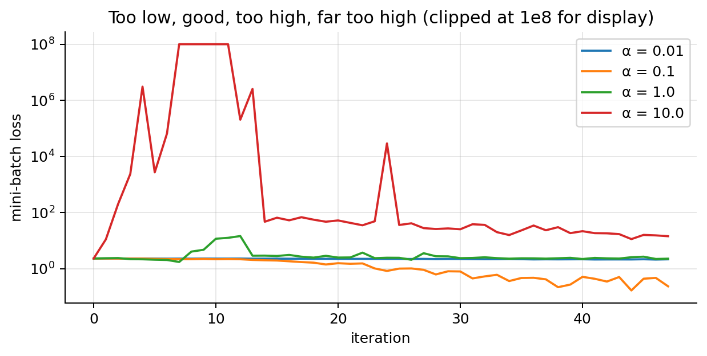
α = 1 with gradient clipping at norm 1: final loss 1.155\(\alpha=0.01\) creeps (still above 2 after three epochs); \(\alpha=0.1\) trains. \(\alpha=1\) spikes and then sticks at \(2.28\approx\log10\): almost all first-layer units are dead (zero for every image), so no gradient flows through them and the network outputs a constant. \(\alpha=10\) explodes, to about \(10^{16}\) within three epochs. Gradient clipping at norm 1 rescues \(\alpha=1\) only partly: it caps each step, it does not make the rate right.
- Exploding gradients (deep or recurrent networks, NN note 01): gradient clipping, residual connections, normalisation layers, a careful initialisation.
- \(\log(0)\) and overflow: never compute \(-\log\sigma(z)\) or \(\log\mathrm{softmax}\) in two steps. For a very negative logit, \(\sigma(z)\) rounds to exactly 0 in floating point and its log is \(-\infty\); the fused losses use the identity \(-\log\sigma(z)=\log(1+e^{-z})\) computed stably:
z_ = torch.tensor([-200.0, 0.0, 200.0]); y_ = torch.tensor([1.0, 1.0, 0.0])
manual = -(y_ * torch.log(torch.sigmoid(z_)) + (1 - y_) * torch.log(1 - torch.sigmoid(z_)))
fused = F.binary_cross_entropy_with_logits(z_, y_, reduction="none")
print("two steps :", manual.numpy()); print("with logits:", fused.numpy())two steps : [ inf 0.6931472 inf]
with logits: [200. 0.6931472 200. ]11.4 Training fine, validation bad: overfitting
Symptom. The training loss keeps falling towards 0 while the validation loss reaches a minimum and turns up (section 7); a growing gap between training and validation accuracy.
Checks. Plot both curves on the same axes (log scale for the loss); compare with a trivial baseline (majority class); check that the validation set comes from the same distribution as the training set (section 12.2) and does not overlap it (section 11.7).
Fixes, roughly in order of preference. More data, or augmentation that reproduces real variation (section 8.3); early stopping with the best checkpoint (free, section 8.4); weight decay (AdamW) and dropout on large dense layers (sections 8.1–8.5); a smaller network; transfer learning from a pre-trained model when data are scarce (NN note 03). Section 8.6 compared them on the digits.
11.5 Both bad, and close: underfitting
Symptom. Training and validation losses are both high and nearly equal; the training accuracy itself is poor.
Checks. Can the model overfit one batch (section 11.1)? If not, it is a bug, not underfitting. Is the training loss still decreasing at the last epoch (then train longer)? Is the regularisation too strong (large \(\lambda\), large \(p\))?
tiny = nn.Sequential(nn.Linear(64, 2), nn.ReLU(), nn.Linear(2, 10)) # a 2-unit bottleneck
for name, net_ in [("64-2-10 (too small)", tiny), ("64-256-256-10", make_mlp())]:
torch.manual_seed(0); L, net_ = quick_run(lr=1e-3, opt="adam", epochs=60, net_=net_)
print(f"{name:20s}: training accuracy {val_acc(net_, X_tr, y_tr):.3f}, validation accuracy {val_acc(net_):.3f}")64-2-10 (too small) : training accuracy 0.282, validation accuracy 0.253
64-256-256-10 : training accuracy 1.000, validation accuracy 0.961Fixes. A deeper or wider network or a better architecture (a CNN for images, NN note 03); train longer; tune \(\alpha\) (often higher) and use a schedule; reduce regularisation; better input features.
11.6 Noisy or oscillating loss
Symptom. The mini-batch loss jumps up and down by much more than its trend; or it oscillates with a regular pattern.
Causes and checks. Some noise is normal: each point is one mini-batch, with the variance of section 2.4. Too much noise means \(\alpha\) too large for the batch size (section 2.5: the noise scale is \(\alpha/B\)), tiny batches, or batches that are not random. A regular pattern is the signature of data that are not shuffled, e.g. sorted by class or by date:
order_tr = np.argsort(y_tr, kind="stable") # training set sorted by digit
fig, axes = plt.subplots(1, 2, figsize=(12, 3.4), sharey=True)
for ax, sh in zip(axes, [False, True]):
L, net_ = quick_run(X_tr[order_tr], y_tr[order_tr], lr=0.05, epochs=20, shuffle=sh)
ax.plot(L[-32:]); ax.set_title(f"shuffle={sh}: last two epochs"); ax.set_xlabel("iteration")
print(f"shuffle={sh!s:5}: loss over the last epoch from {L[-16:].min():.2f} to {L[-16:].max():.2f}, "
f"validation accuracy {val_acc(net_):.3f}")
axes[0].set_ylabel("mini-batch loss"); plt.tight_layout(); plt.show()shuffle=False: loss over the last epoch from 0.15 to 1.67, validation accuracy 0.670
shuffle=True : loss over the last epoch from 0.29 to 0.55, validation accuracy 0.904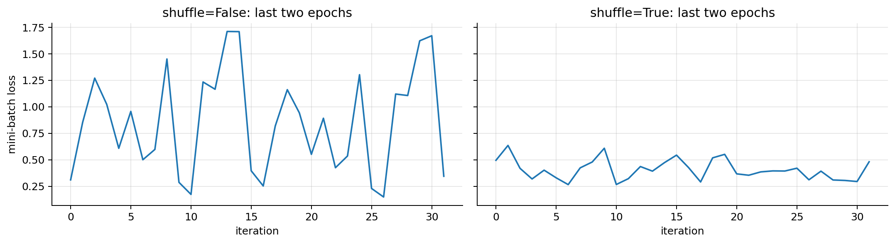
Without shuffling, each mini-batch holds one or two digits: the network learns the current digit, forgets the previous ones (each batch gradient is a biased estimate, section 12.1), and the loss cycles with the class order. Fixes: shuffle=True; lower \(\alpha\) or a decaying schedule; a larger batch; gradient clipping for rare spikes; and, for display, smooth the curve with an EMA (section 4.1) instead of reading single batches.
11.7 Validation loss below training loss
Symptom. The validation loss (or error) is lower than the training loss.
Causes and checks.
- Dropout or augmentation act only in training: the training loss is measured on a handicapped network or harder inputs. Check by evaluating the training set in
eval()mode. Normal; compare accuracies, or the training loss in eval mode. - The epoch-average lag. The training loss is averaged over the epoch while the weights improve; the validation loss is measured at the end of the epoch, with better weights. Most visible in the first epochs.
- Leakage: the validation set contains (near-)duplicates of training examples (the same photo twice, several photos of the same claim split between train and validation), or a feature that encodes the label. This one is a real problem: the validation score is optimistic. Check with the distance from each validation example to its nearest training example; exact or near duplicates show up as a spike at 0.
with torch.no_grad():
m_do.train(); tl_train_mode = F.cross_entropy(m_do(Xtr_t), ytr_t).item()
m_do.eval(); tl_eval_mode = F.cross_entropy(m_do(Xtr_t), ytr_t).item()
vl_do = F.cross_entropy(m_do(torch.tensor(X_va)), torch.tensor(y_va)).item()
print(f"dropout model: training loss in train mode {tl_train_mode:.3f}, in eval mode {tl_eval_mode:.4f}; validation loss {vl_do:.3f}")
leak = X_va.copy(); dup = rng.choice(len(X_va), 150, replace=False) # plant 150 near-copies of training images
leak[dup] = np.clip(X_tr[rng.integers(0, len(X_tr), 150)] + 0.01 * rng.normal(size=(150, 64)), 0, 1)
d2 = ((leak[:, None, :] - X_tr[None, :, :]) ** 2).sum(-1) # squared distances, (648, 500)
nn_dist = np.sqrt(d2.min(1))
print(f"validation images with a training image at distance < 0.5: {(nn_dist < 0.5).sum()} (planted: 150); "
f"typical nearest distance otherwise: {np.median(nn_dist[nn_dist >= 0.5]):.2f}")dropout model: training loss in train mode 0.018, in eval mode 0.0004; validation loss 0.140
validation images with a training image at distance < 0.5: 151 (planted: 150); typical nearest distance otherwise: 1.17Fixes for leakage: split by group (claim, customer, patient, vehicle), not by row (GroupShuffleSplit); deduplicate before splitting; for time-ordered data, validate on a later period.
11.8 Great in training and validation, terrible in use
Causes. Forgetting model.eval() (section 9.4); preprocessing at prediction time that differs from training (a different scaling, resizing, colour convention, or statistics recomputed on the new data); distribution shift between the training data and the live data (section 12.2). The first two are bugs and are fixed by sharing one preprocessing function between training and serving. For instance, our MLP was trained on dark-background images scaled to \([0,1]\); served images from a scanner that stores ink as 0 and paper as 1, or standardised with statistics computed on the new batch:
mu_new, sd_new = X_te.mean(0), X_te.std(0) + 1e-2
for name, Xs in [("training preprocessing", X_te), ("inverted intensities (1 - x)", 1 - X_te),
("standardised with the new data's statistics", (X_te - mu_new) / sd_new)]:
print(f"{name:45s}: test accuracy {val_acc(model, Xs.astype(np.float32), y_te):.3f}")training preprocessing : test accuracy 0.972
inverted intensities (1 - x) : test accuracy 0.000
standardised with the new data's statistics : test accuracy 0.91711.9 Silent shape bugs: broadcasting
Symptom. The loss decreases a little and then stalls at a strange value, with no error. A classic: a regression model outputs shape [B, 1], the targets have shape [B], and a hand-written loss broadcasts the difference to [B, B], comparing every prediction with every target:
pred = torch.arange(4.0).reshape(4, 1) # model output: shape [4, 1]
target = torch.arange(4.0) # targets: shape [4]
diff = pred - target # broadcasts to [4, 4]!
print("shape of pred - target:", tuple(diff.shape), "; wrong MSE", (diff ** 2).mean().item(),
"; correct MSE", ((pred.squeeze(1) - target) ** 2).mean().item())shape of pred - target: (4, 4) ; wrong MSE 2.5 ; correct MSE 0.0The predictions are perfect, yet the “MSE” is 2.5, and minimising it pushes every prediction towards the mean target. nn.MSELoss warns about mismatched shapes, a hand-written loss does not. Fix: assert shapes (assert pred.shape == target.shape), squeeze the output, and print model(xb).shape for a batch before training.
12. Assumptions of training: what they mean, how to check them, what to do
Mini-batch training minimises the average loss on the training data and hopes that the result carries over to new data. That hope rests on assumptions about the data and the procedure that are rarely stated.
| Assumption | What goes wrong if it fails | How to check | What to do |
|---|---|---|---|
| Mini-batches are random samples (shuffling) | biased gradients; the network forgets earlier batches; cyclic, noisy loss | label (and group) composition per batch vs the whole set; loss pattern | shuffle=True every epoch; shuffle buffers for streams; stratified batches |
| Stationarity: training, validation and live data share one distribution | good validation, poor use; silent degradation over time | domain classifier AUC; per-feature two-sample tests (KS); monitor inputs | collect recent data and retrain / fine-tune; augment for the variation; importance weights |
| Label quality: labels are (mostly) correct | the network memorises the errors; validation optimistic or pessimistic | per-example loss of an early model; review the highest-loss examples | relabel; early stopping; label smoothing; robust losses |
| Class balance matches deployment, minority classes well represented | low recall on rare classes; probabilities biased to the training prior | class counts; per-class recall; mean predicted probability vs frequency | logit adjustment; weighted loss or resampling; more minority data |
| Reproducibility: results do not depend on luck | differences between runs mistaken for improvements | rerun with the same seed (identical?) and with 3–5 seeds (spread) | seed everything, deterministic mode; report mean ± sd over seeds |
12.1 Mini-batches are random samples of the training set
What it says. Each mini-batch is a uniform random sample of the training examples, drawn independently of the order in which the data were stored. Then every index is uniform and the mini-batch gradient is an unbiased, low-variance estimate of \(\nabla J\) (sections 2.3–2.4).
Why it matters. The unbiasedness proof of section 2.3 is the only guarantee that SGD minimises \(J\) and not something else. With data sorted by class, date or source, each gradient is a biased estimate of \(\nabla J\): the network is pulled towards the current group and forgets the others (catastrophic forgetting), and the final weights reflect the last groups seen. This damages prediction directly (section 11.6: validation accuracy dropped). It is a property of the procedure, not of the model, so no amount of capacity fixes it.
How to check. Compare the composition of the batches with that of the whole training set. For labels, a per-batch chi-square statistic \(X^2_b=\sum_{k=1}^K\frac{(n_{bk}-B\pi_k)^2}{B\pi_k}\), with \(n_{bk}\) the count of class \(k\) in batch \(b\) and \(\pi_k\) its frequency in the training set, measures how far a batch is from the global mix. For random batches it is roughly \(\chi^2_{K-1}\) (mean \(K-1=9\)); with only \(B\pi_k\approx3\) expected examples per cell that approximation is crude, so compare with the distribution produced by a shuffled loader, which is the correct reference by construction.
from scipy import stats
pi = np.bincount(y_tr, minlength=10) / len(y_tr)
def batch_chi2(loader):
out = []
for _, yb in loader:
if len(yb) < 32: continue
n_k = np.bincount(yb.numpy(), minlength=10); e_k = len(yb) * pi
out.append(((n_k - e_k) ** 2 / e_k).sum())
return np.array(out)
chi_sorted = batch_chi2(DataLoader(to_ds(X_tr[order_tr], y_tr[order_tr]), batch_size=32, shuffle=False))
chi_shuf = np.concatenate([batch_chi2(DataLoader(to_ds(X_tr[order_tr], y_tr[order_tr]), batch_size=32, shuffle=True,
generator=torch.Generator().manual_seed(s))) for s in range(20)])
q95 = np.quantile(chi_shuf, 0.95)
print(f"shuffled batches: mean X² {chi_shuf.mean():.1f} (chi2_9 mean 9; its 95% quantile {stats.chi2.ppf(0.95, 9):.1f}, "
f"empirical 95% quantile {q95:.1f})")
print(f"sorted batches : mean X² {chi_sorted.mean():.1f}; fraction above the shuffled 95% quantile {np.mean(chi_sorted > q95):.2f}")
fig, axes = plt.subplots(1, 2, figsize=(12, 3.2))
axes[0].hist(chi_shuf, bins=30, alpha=0.7, label="shuffled"); axes[0].hist(chi_sorted, bins=30, alpha=0.7, label="sorted")
axes[0].set_xlabel("X² of a mini-batch"); axes[0].set_ylabel("count"); axes[0].legend()
axes[1].plot(y_tr[order_tr][:160], ".", ms=3, label="sorted"); axes[1].plot(y_tr[rng.permutation(500)][:160], ".", ms=3, label="shuffled")
axes[1].set_xlabel("position in the stream (first 5 batches)"); axes[1].set_ylabel("label"); axes[1].legend(fontsize=8)
plt.tight_layout(); plt.show()shuffled batches: mean X² 8.7 (chi2_9 mean 9; its 95% quantile 16.9, empirical 95% quantile 15.6)
sorted batches : mean X² 225.0; fraction above the shuffled 95% quantile 1.00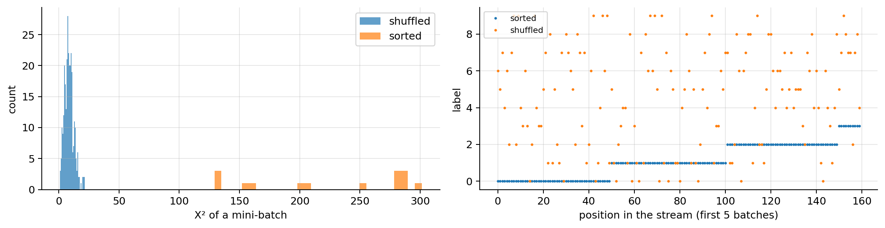
The shuffled batches match the reference; the sorted ones are far outside it. The same check applies to any grouping variable (source, date, customer). A glance at the label sequence of the first few batches (right) is often enough.
What to do. (1) shuffle=True in the training DataLoader: it reshuffles every epoch, at no cost. (2) For data too large to shuffle in memory (streams, sharded files), a shuffle buffer that mixes a window of examples, plus shuffling the order of the shards. (3) For rare classes or groups, stratified or balanced batch samplers (section 12.4). (4) Keep the validation split separate from shuffling concerns: for grouped or time-ordered data the split must respect groups and time (section 11.7), even though the training batches are shuffled.
12.2 Stationarity: one distribution for training, validation and use
What it says. The pairs \((\mathbf{x},y)\) seen in training, in validation and in use are draws from the same distribution, which does not change over time.
Why it matters. \(J\) is an average over the training distribution; minimising it minimises the expected loss on that distribution. When the inputs shift (covariate shift: a new camera, a new region, a new product), or the relation between inputs and labels changes (concept drift: fraud patterns adapt), the validation score no longer predicts the live score. The damage is to prediction, and it is silent: the model still outputs confident probabilities. (Within training, a non-stationary stream, e.g. learning online from data that drift, breaks the “stationary gradients” assumption of the EMA analysis in section 4.1: old statistics are then stale, which is one reason for short averaging windows in online settings.)
How to check. Two checks from scratch, on a simulated “new camera”: the test images with half the contrast, a grey background and some sensor noise (\(0.5\,x+0.3+\) noise).
- Domain classifier (“adversarial validation”): label training inputs 0 and new inputs 1, train a classifier to tell them apart, and compute its cross-validated AUC. AUC \(\approx0.5\): indistinguishable; AUC near 1: a strong shift. The AUC is the Mann–Whitney probability that a random new example scores higher than a random training example, computed from ranks.
- Per-feature two-sample tests: the Kolmogorov–Smirnov statistic \(D=\max_x|\hat F_{\text{train}}(x)-\hat F_{\text{new}}(x)|\), the largest gap between the two empirical CDFs, on each feature or on summary features (mean brightness).
from sklearn.linear_model import LogisticRegression
from sklearn.model_selection import cross_val_predict
def auc_mann_whitney(score, label):
r = stats.rankdata(score); n1 = label.sum(); n0 = len(label) - n1
return (r[label == 1].sum() - n1 * (n1 + 1) / 2) / (n1 * n0)
def ks_stat(a, b):
grid = np.sort(np.concatenate([a, b]))
Fa = np.searchsorted(np.sort(a), grid, side="right") / len(a); Fb = np.searchsorted(np.sort(b), grid, side="right") / len(b)
return np.abs(Fa - Fb).max()
rng_s = np.random.default_rng(3)
X_new = np.clip(0.5 * X_te + 0.3 + 0.05 * rng_s.normal(size=X_te.shape), 0, 1).astype(np.float32) # "new camera"
for name, Xn_ in [("same distribution (test set)", X_te), ("new camera", X_new)]:
Xdc = np.vstack([X_tr, Xn_]); ldc = np.r_[np.zeros(len(X_tr)), np.ones(len(Xn_))].astype(int)
score = cross_val_predict(LogisticRegression(max_iter=2000), Xdc, ldc, cv=5, method="predict_proba")[:, 1]
D = ks_stat(X_tr.mean(1), Xn_.mean(1))
print(f"{name:29s}: domain AUC {auc_mann_whitney(score, ldc):.3f}; KS on mean brightness D = {D:.3f} "
f"(scipy {stats.ks_2samp(X_tr.mean(1), Xn_.mean(1)).statistic:.3f}); MLP accuracy {val_acc(model, Xn_, y_te):.3f}")same distribution (test set) : domain AUC 0.524; KS on mean brightness D = 0.074 (scipy 0.074); MLP accuracy 0.972
new camera : domain AUC 1.000; KS on mean brightness D = 1.000 (scipy 1.000); MLP accuracy 0.747The domain classifier cannot separate the ordinary test set from the training set (AUC close to 0.5) but separates the new-camera images perfectly, the brightness distributions do not overlap at all (\(D=1\)), and the model’s accuracy falls by more than 20 points. Caveat: with large samples a formal test (the KS p-value) flags tiny, harmless differences, so look at effect sizes (AUC, \(D\)) and at the model’s performance on labelled recent data, not at p-values.
What to do. (1) Collect and label recent data, and retrain or fine-tune: the only complete fix for concept drift. (2) For covariate shift you can anticipate, augment the training data with that variation (brightness, contrast, noise for images), as below. (3) Importance weighting: weight each training example by \(w(\mathbf{x})=p_{\text{new}}(\mathbf{x})/p_{\text{train}}(\mathbf{x})\), estimated from the domain classifier’s probability \(c(\mathbf{x})\) as \(\frac{c(\mathbf{x})}{1-c(\mathbf{x})}\cdot\frac{m_{\text{train}}}{m_{\text{new}}}\) (Bayes’ rule on the domain label); useful for mild shifts, unstable when the domains barely overlap. (4) In production, monitor the input statistics and the domain AUC over time. The augmentation fix, applied here:
def brightness_noise(X, rng_):
a = rng_.uniform(0.4, 1.0, size=(len(X), 1)); b = rng_.uniform(0.0, 0.4, size=(len(X), 1)) # contrast, background
return np.clip(a * X + b + 0.05 * rng_.normal(size=X.shape), 0, 1).astype(np.float32)
rng_a = np.random.default_rng(4)
X_aug = np.vstack([X_tr] + [brightness_noise(X_tr, rng_a) for _ in range(3)]); y_aug = np.tile(y_tr, 4)
torch.manual_seed(0); m_aug = make_mlp()
train(m_aug, torch.optim.Adam(m_aug.parameters(), lr=1e-3), epochs=40,
loader=DataLoader(to_ds(X_aug, y_aug), batch_size=32, shuffle=True, generator=torch.Generator().manual_seed(0)))
print(f"trained with contrast/brightness/noise augmentation: accuracy on the test set {val_acc(m_aug, X_te, y_te):.3f}, "
f"on the new-camera images {val_acc(m_aug, X_new, y_te):.3f}")trained with contrast/brightness/noise augmentation: accuracy on the test set 0.957, on the new-camera images 0.917Augmenting with random contrast, background level and noise recovers most of the accuracy on the new camera, at the price of about a point and a half on the original images: the model spends capacity on invariances the original data did not need.
12.3 Label quality
What it says. The labels \(y^{(i)}\) are the true classes, or the errors are few and unrelated to the inputs.
Why it matters. Cross-entropy is the negative log-likelihood of the labels as given; a network with enough capacity fits them all, errors included (section 11.2 showed it memorising random labels). Wrong labels in the training set degrade prediction; wrong labels in the validation or test set corrupt the evaluation, and hence every decision based on it. Below, a fraction of the 500 training labels is replaced by a random wrong digit:
def train_acc_curve(X, y, epochs=60, seed=0, label_smoothing=0.0):
torch.manual_seed(seed); net_ = make_mlp(); o = torch.optim.Adam(net_.parameters(), lr=1e-3)
loader = DataLoader(to_ds(X, y), batch_size=32, shuffle=True, generator=torch.Generator().manual_seed(seed))
yt, H = torch.tensor(y), []
for _ in range(epochs):
net_.train()
for xb, yb in loader:
o.zero_grad(); F.cross_entropy(net_(xb), yb, label_smoothing=label_smoothing).backward(); o.step()
net_.eval()
with torch.no_grad():
H.append(((net_(Xtr_t).argmax(1) == yt).float().mean().item(), (net_(Xte_t).argmax(1) == yte_t).float().mean().item()))
return np.array(H), net_
rng_l = np.random.default_rng(1); noisy = {}
for rate in [0.0, 0.2, 0.4]:
y_noisy = y_tr.copy(); flip = rng_l.random(len(y_tr)) < rate
y_noisy[flip] = (y_tr[flip] + rng_l.integers(1, 10, flip.sum())) % 10 # a random *wrong* digit
H, net_ = train_acc_curve(X_tr, y_noisy); noisy[rate] = (y_noisy, flip, net_, H)
print(f"{rate:.0%} wrong labels ({flip.sum():3d}): accuracy on the given training labels {H[-1, 0]:.3f}, "
f"test accuracy final {H[-1, 1]:.3f}, best {H[:, 1].max():.3f} (epoch {H[:, 1].argmax() + 1})")0% wrong labels ( 0): accuracy on the given training labels 1.000, test accuracy final 0.972, best 0.974 (epoch 27)
20% wrong labels ( 87): accuracy on the given training labels 0.948, test accuracy final 0.904, best 0.952 (epoch 15)
40% wrong labels (191): accuracy on the given training labels 0.922, test accuracy final 0.716, best 0.886 (epoch 14)With noisy labels the network fits far more of the given labels than are correct (with 20 % flipped, only about 83 % of the given labels are right, yet it matches about 95 % of them): it memorises many of the wrong ones, and the test accuracy falls. The best test accuracy is reached early, before the memorisation. Networks fit the clean, consistent patterns first and the individual errors later (Arpit et al., 2017), which is why early stopping helps here and why an early model is the better detector of label errors.
How to check. Rank the training examples by their loss under the model and review the top of the list. The loss of a fully trained model is uninformative (it has memorised the errors); the loss of an early-stopped model, or out-of-fold predictions from cross-validation, is much better:
y_noisy, flip, net_full, H20 = noisy[0.2]
_, net_early = train_acc_curve(X_tr, y_noisy, epochs=8)
for name, net_ in [("fully trained (60 epochs)", net_full), ("early model (8 epochs)", net_early)]:
with torch.no_grad(): loss_i = F.cross_entropy(net_(Xtr_t), torch.tensor(y_noisy), reduction="none").numpy()
top = np.argsort(-loss_i)[:flip.sum()]
print(f"{name:26s}: among the {flip.sum()} highest-loss examples, {flip[top].mean():.0%} are the wrong labels")
H_ls, _ = train_acc_curve(X_tr, y_noisy, label_smoothing=0.1)
print(f"label smoothing 0.1 with 20% wrong labels: final test accuracy {H_ls[-1, 1]:.3f} (vs {H20[-1, 1]:.3f} without)")fully trained (60 epochs) : among the 87 highest-loss examples, 70% are the wrong labels
early model (8 epochs) : among the 87 highest-loss examples, 93% are the wrong labels
label smoothing 0.1 with 20% wrong labels: final test accuracy 0.924 (vs 0.904 without)What to do. (1) Relabel the suspicious examples found this way (a human review of the top of the list is cheap and usually the best investment). (2) Early stopping, which limits memorisation. (3) Label smoothing: train towards \((1-\varepsilon)\,\text{one-hot}+\varepsilon/K\) instead of the one-hot target (CrossEntropyLoss(label_smoothing=ε)), so the network is never pushed to infinite confidence on any label. (4) Robust losses and noise-aware training for heavily noisy data. (5) Keep the test labels clean above all: a noisy test set makes every comparison unreliable.
12.4 Class imbalance
What it says. The class frequencies in the training set are the ones that matter in use, and every class has enough examples to learn from.
Why it matters. The minimiser of the expected cross-entropy is the true conditional probability under the training distribution, \(p_{\text{train}}(k\mid\mathbf{x})\propto\pi_k\,p(\mathbf{x}\mid k)\) (Bayes’ rule, with \(\pi_k\) the training frequency of class \(k\)). A rare class gets small probabilities, rarely wins the argmax, and has low recall; overall accuracy hides this because the rare class weighs little in it. Prediction of the rare class suffers, and the probabilities are calibrated to the training prior, not to the deployment prior. Below, digit 8 keeps only 5 of its 50 training images:
from torch.utils.data import WeightedRandomSampler
rare = 8; keep = np.ones(len(y_tr), bool); keep[np.where(y_tr == rare)[0][5:]] = False
Xi, yi = X_tr[keep], y_tr[keep]; counts = np.bincount(yi, minlength=10)
print("training counts per class:", counts)
def fit_imb(mode, seed=0, epochs=40):
torch.manual_seed(seed); net_ = make_mlp(); o = torch.optim.Adam(net_.parameters(), lr=1e-3)
g = torch.Generator().manual_seed(seed)
weight = torch.tensor(len(yi) / (10 * counts), dtype=torch.float32) if mode == "weighted CE" else None
if mode == "resampling":
w_i = torch.tensor(1.0 / counts[yi], dtype=torch.double) # each class drawn equally often
loader = DataLoader(to_ds(Xi, yi), batch_size=32, generator=g,
sampler=WeightedRandomSampler(w_i, num_samples=len(yi), replacement=True, generator=g))
else:
loader = DataLoader(to_ds(Xi, yi), batch_size=32, shuffle=True, generator=g)
for _ in range(epochs):
net_.train()
for xb, yb in loader: o.zero_grad(); F.cross_entropy(net_(xb), yb, weight=weight).backward(); o.step()
return net_.eval()
adjust = torch.tensor(np.log(0.1 / (counts / counts.sum())), dtype=torch.float32) # log(pi_test / pi_train)
rows = {k: [] for k in ["plain", "plain + logit adjustment", "weighted CE", "resampling"]}
for s in range(3):
for mode in ["plain", "weighted CE", "resampling"]:
net_ = fit_imb(mode, seed=s)
with torch.no_grad(): z_ = net_(Xte_t)
variants = [(mode, z_)] + ([("plain + logit adjustment", z_ + adjust)] if mode == "plain" else [])
for name, zz in variants:
pred = zz.argmax(1).numpy()
rows[name].append(((pred[y_te == rare] == rare).mean(), (pred == y_te).mean(), torch.softmax(zz, 1)[:, rare].mean().item()))
for name, r in rows.items():
r = np.array(r); print(f"{name:25s}: recall of digit {rare} {r[:, 0].mean():.3f}, accuracy {r[:, 1].mean():.3f}, "
f"mean predicted p({rare}) {r[:, 2].mean():.3f} (3 seeds)")training counts per class: [50 51 49 51 50 51 50 50 5 50]
plain : recall of digit 8 0.312, accuracy 0.906, mean predicted p(8) 0.033 (3 seeds)
plain + logit adjustment : recall of digit 8 0.640, accuracy 0.935, mean predicted p(8) 0.071 (3 seeds)
weighted CE : recall of digit 8 0.423, accuracy 0.912, mean predicted p(8) 0.046 (3 seeds)
resampling : recall of digit 8 0.508, accuracy 0.924, mean predicted p(8) 0.051 (3 seeds)How to check. Class counts in every split; per-class recall and the confusion matrix (not only accuracy); the average predicted probability of each class against its frequency in the evaluation data. Here the plain model’s mean predicted probability of digit 8 is far below its 10 % share of the balanced test set.
What to do, with the reasoning behind each fix:
- Logit adjustment (post hoc, no retraining). If only the class prior differs between training and use, Bayes’ rule gives \(p_{\text{use}}(k\mid\mathbf{x})\propto p_{\text{train}}(k\mid\mathbf{x})\,\frac{\pi^{\text{use}}_k}{\pi^{\text{train}}_k}\), since \(p(\mathbf{x}\mid k)\) is unchanged. In logits: add \(\log\pi^{\text{use}}_k-\log\pi^{\text{train}}_k\) to class \(k\)’s logit. Cheap, and it keeps the probabilities calibrated for the new prior. It is the same correction as moving the decision threshold in binary classification (ML note 02).
- Weighted cross-entropy
CrossEntropyLoss(weight=w)with \(w_k\propto1/\pi_k\). Its population minimiser: for a fixed \(\mathbf{x}\), minimise \(-\sum_kw_k\,p(k\mid\mathbf{x})\log q_k\) over probability vectors \(q\); with a Lagrange multiplier for \(\sum_kq_k=1\), \(-w_kp(k\mid\mathbf{x})/q_k+\nu=0\), so \(q_k=\frac{w_k\,p(k\mid\mathbf{x})}{\sum_jw_j\,p(j\mid\mathbf{x})}\). The network learns probabilities tilted by the weights: with \(w_k\propto1/\pi_k\) it is the balanced-prior posterior. Divide the predicted probabilities by \(w_k\) and renormalise to recover the training-prior ones. - Resampling (
WeightedRandomSampler): draw examples with probability \(\propto1/\pi_{y}\), so batches are balanced. In expectation it gives the same gradient as the weighted loss, with less variance per batch, but the few rare examples are repeated many times (overfitting risk; combine with augmentation). - More data for the rare class, when possible, beats all of these; focal loss (NN note 03, detection) is another option when the imbalance is extreme.
On this example all three corrections raise the recall of the rare digit, and the post-hoc logit adjustment, the cheapest, does best. The ranking is not universal: compare them on validation data with the metric you care about.
12.5 Reproducibility: seeds and determinism
What it says. Running the same code on the same data with the same seed gives the same result, and the variation between seeds is known and small compared with the differences you report.
Why it matters. Training is random: initial weights, shuffling, dropout masks, augmentation. Two configurations whose difference is smaller than the seed-to-seed spread cannot be ranked from one run each. This is about inference on the method (“is B better than A?”), not about the prediction of any single model.
How to check. Train twice with the same seed and compare the weights (they should be identical on a CPU); train with several seeds and look at the spread.
def run_seed(seed, p_drop, epochs=40):
torch.manual_seed(seed); net_ = make_mlp(p_drop)
loader = DataLoader(to_ds(X_tr, y_tr), batch_size=32, shuffle=True, generator=torch.Generator().manual_seed(seed))
train(net_, torch.optim.Adam(net_.parameters(), lr=1e-3), epochs=epochs, loader=loader)
return net_
a1, a2 = run_seed(0, 0.0, epochs=5), run_seed(0, 0.0, epochs=5)
print("same seed twice, identical weights:", all(torch.equal(p, q) for p, q in zip(a1.parameters(), a2.parameters())))
res = {p: np.array([val_acc(run_seed(s, p)) for s in range(5)]) for p in [0.0, 0.2]}
for p, r in res.items(): print(f"dropout {p}: validation accuracy per seed {np.round(r, 3)}, mean {r.mean():.3f} ± {r.std(ddof=1):.3f}")
d = res[0.2] - res[0.0]
print(f"paired difference (same seeds): mean {d.mean():+.3f}, sd {d.std(ddof=1):.3f}")same seed twice, identical weights: True
dropout 0.0: validation accuracy per seed [0.963 0.963 0.96 0.963 0.961], mean 0.962 ± 0.001
dropout 0.2: validation accuracy per seed [0.968 0.971 0.968 0.966 0.965], mean 0.967 ± 0.002
paired difference (same seeds): mean +0.005, sd 0.002Same seed, same weights: on a CPU, PyTorch is deterministic. Across seeds the validation accuracy varies only by a few thousandths here (only the initialisation and the shuffling change, on a small, easy problem); dropout 0.2 is better on every one of the five seeds, by half a point on average, which is well above the seed-to-seed spread of the paired differences. On larger problems the spread between seeds is often one point or more, and a single pair of runs cannot rank two configurations.
What to do. Seed every generator: torch.manual_seed, np.random.seed or a default_rng(seed), random.seed, and give the DataLoader its own generator (plus a worker_init_fn with several workers). On GPUs, some operations are non-deterministic by default: torch.use_deterministic_algorithms(True) (with CUBLAS_WORKSPACE_CONFIG=:4096:8) and torch.backends.cudnn.benchmark = False make them deterministic at some speed cost. Record the library versions. And report results as mean ± standard deviation over at least 3 seeds, comparing configurations on the same seeds (paired), as above.
13. Cheat-sheet: sensible defaults
| Knob | Default |
|---|---|
| optimiser | Adam / AdamW, \(\alpha=10^{-3}\) |
| batch size | 32–64 (as large as memory allows for big models, with \(\alpha\) scaled) |
| epochs | until the validation loss stops improving (early stopping) |
| hidden activation | ReLU (GELU in transformers) |
| initialisation | PyTorch default (He / Xavier-like, NN note 01) |
| schedule | cosine or step decay; warm-up for transformers |
| input scaling | standardise features; images to \([0,1]\), then mean/std |
| weight decay | \(10^{-4}\) (SGD) · \(10^{-2}\) (AdamW) |
| dropout | 0.2–0.5 on dense layers |
| normalisation | BatchNorm in CNNs, LayerNorm in transformers |
| gradient clipping | norm 1.0 for RNNs / transformers |
| what to log | training + validation loss and metric, every epoch |
These get you most of the way on most problems. Tune the learning rate first, then the regularisation, then the architecture.
14. Vocabulary
- mini-batch, epoch, iteration: a few examples per update; one full pass over the training set; one update.
- learning rate \(\alpha\): the step size; the most important hyperparameter.
- moving average (EMA): \(v\leftarrow\beta v+(1-\beta)g\), a smoothed signal over about \(1/(1-\beta)\) steps; bias-corrected by \(1-\beta^t\).
- momentum: a velocity that accumulates gradients: faster along valleys, less zig-zag.
- RMSProp, Adam: per-parameter step sizes from the average \(g^2\); Adam adds momentum and bias correction.
- schedule, warm-up: changing \(\alpha\) during training: small at first, large, then decaying.
- noise scale \(\alpha/B\): what sets the spread of SGD around a minimum; the linear scaling rule keeps it constant.
- overfitting / underfitting: good on training data and bad on new data / bad on both.
- weight decay (L2): penalty \(\frac\lambda2\lVert\mathbf{w}\rVert^2\): every step shrinks the weights by \(1-\alpha\lambda\); AdamW applies it outside Adam’s rescaling.
- dropout: randomly switch units off in training (inverted: rescale by \(1/(1-p)\)); all on at prediction time.
- early stopping: keep the checkpoint with the best validation loss; roughly L2 with \(\lambda\approx1/(\alpha t)\).
- BatchNorm, LayerNorm: normalise over the batch / over the features, then scale and shift (\(\gamma,\beta\)).
- train / eval mode:
model.train()/model.eval()switch dropout and BatchNorm behaviour. - gradient clipping: cap the norm of the gradient.
15. Labs
- Lab 8 · The MLP again, now with PyTorch (open in Colab): see section 6.
- Lab 9 · Multiclass images with an MLP (Fashion-MNIST) (open in Colab). 70,000 greyscale images of clothes, 10 classes: train / validation / test splits and preprocessing (scale, standardise, flatten); from sigmoid to softmax and the categorical cross-entropy; softmax regression against an MLP, with a training loop and early stopping; accuracy, confusion matrix, per-class metrics and the errors; experiments with width, depth and dropout; and the limit of MLPs: shift the pictures a few pixels and watch the accuracy fall, which motivates CNNs (NN note 03). Expected result: MLP ≈ 88 % test accuracy, softmax regression ≈ 84 %. A CPU is fine.
Summary
- The loss of a network is non-convex (permutation symmetry, saddles); mini-batch SGD uses an unbiased gradient estimate whose covariance is \(\boldsymbol{\Sigma}/B\). Constant-\(\alpha\) SGD hovers in a noise ball of size \(\propto\alpha/B\): decay \(\alpha\) late, and scale \(\alpha\) with \(B\) (linear scaling, with warm-up).
- The learning rate is the main knob: find it with a range test. The EMA is biased by \(1-\beta^t\) at the start; momentum averages gradients (up to \(1/(1-\beta)\) longer steps along valleys), RMSProp divides by their RMS (scale-invariant steps), Adam does both with bias correction.
- Training loop:
zero_grad→ forward → loss →backward→step(→sched.step()); evaluate ineval()mode underno_grad(), weighting metrics by batch size. - Regularisation: weight decay shrinks by \(1-\alpha\lambda\) per step; in Adam use AdamW, because L2 inside Adam is divided by \(\sqrt{\hat{\mathbf{s}}}\). Augmentation (input noise = ridge for linear models), early stopping (\(\approx\) ridge with \(\lambda\approx1/(\alpha t)\)), dropout (inverted: mean kept, variance \(\frac{p}{1-p}a^2\), an adaptive L2).
- BatchNorm standardises over the batch, with a backward pass that centres the gradient and uses running statistics in eval mode; beware of forgetting
eval(), tiny batches and dropout before BN. LayerNorm normalises each example and needs no batch. - Debug from the loss curve: initial loss \(\approx\log K\), overfit one batch, check inputs, labels, shuffling and shapes; check the assumptions (random batches, stationarity, clean labels, balance, seeds) before trusting a result.
print(f"total run time of this note's code: {time.time() - T_START:.0f} s")total run time of this note's code: 60 s